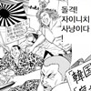

식민지가 아니라 그냥 일본이었는데. 조선이 식민지면 오스트리아도 독일의 식민지고 스코틀란드도 영국의 식민지임? 같이 대동아공영권을 위해 노력한 주체였음. 식민지는 만주국과 남양군도였지
↳ 답글 · ㅇㅇ · 11.20 03:37:51
만주국은 그 누구보다 친일부역행위를 앞장서서한 매국노 한간漢奸들이 가장 많았었는데 ㅋㅋ
뭔 역사 미화를 하누? ㅋㅋ
우리 게시판 이용자는 한국인이 아니라, 변발 오랑캐 청나라Qing를 숭배하누? ㅋㅋ
↳ 답글 · ㅇㅇ · 11.20 03:39:23
'장제스는 정통성이 부족했기에 대륙의 주인이 될 수 없었으며, 항일투쟁의 주역이었던 마오쩌둥 주석에게는 정통성이 있었기에 중화대륙의 주인이 될 수 있었으나, 마오쩌둥 주석은 중화대륙의 주인이 되지 아니하고, 중화대륙을 중화 인민들에게 나누어주시며, 마르크스-레닌주의를 전파하시었다'
↳ 답글 · ㅇ ㅇ · 11.20 08:01:43
@ㅇㅇ(49.167) 대만도 일본의.식민지였음 한일동조론에 의한 내선일체의 조선은 오스트리아 정도로 보면.됨
N갤러 · 11.20 03:48:44
일본 욕하지마 이놈아 임마
ㅇㅇ · 11.20 03:50:22
ㅇㅇ · 11.20 03:51:23
유투브가서 나는 한국인인데 너무 감사합니다 이딴 댓글좀 쳐 싸지말라그래라 지가 한국인인거 누가 안알아주면 디지는 병 걸린건지
ㅇㅇ · 11.20 03:53:45
그래 일본이랑 서로 친한게 지내자 서로 나쁜말 ㄴㄴ
우리 이대남 삼대남 일찍 이찍들도 싸우지말고 잘살아보자
ㅇㅇ · 11.20 03:54:14
ㅇㅇ · 11.20 04:07:39
창씨개명이 강제가 아니였다고 하는데 어차피 그 시절 일본 귀족인 화족이나 왕실 새끼들은 전부 딱 들어도 아 이새끼 황족이네 알정도로 성씨가 달랐고 저새끼들이 창씨개명 한건 다나카 야마다 처럼 밭 일구는 사람이면 다나카 산 등성이에 살면 야마다 처럼 지들이 이해하기 편하게 바꿨겠지
ㅇㅇ · 11.20 04:09:32
나는 중국 소수민족이라도 되어서
공민증 받는 게 내 평생 소원이다
ㅇㅇ · 11.20 04:16:03
울할머니한테도 물어보니까 쿠니모토라고 알려주셨던게 기억남 전주이씨라서.. 國本
앗 · 11.20 04:17:56
미크로네시아의 초대 대통령도 토시오 나카야마…
ㅇㅇ · 11.20 04:36:26
요새 미국 이름도 짓는데 일본 이름도 있으면 좋은거 아냐?
삭제됨 · 11.20 04:43:17
삭제된 댓글입니다.
↳ 답글 · ㅇㅇ · 11.20 04:43:23
ㅇㅇ · 11.20 05:00:40
어릴적사진임?
↳ 답글 · ㅇㅇ · 11.20 08:10:38
주온 모름? 와. 어려서 좋다
naver · 11.20 05:02:54
노력 없이 살 빼는 꿈의 다이어트 주사.
전세계 처방약 최상위권을 싹쓸이 하고 있는 이 약은. ㆍㆍㆍ
물론 자식이 살이 많이 찌면 건강부터 걱정되기 마련이니까 이해는 하지만 그렇다고 해도 잘 알지도 못하는 주사를 그저 여기저기서 좋다고 하니 자기 자식한테도 맞게 하는 건 좀 씁쓸하다. 내 자식만 부작용 안 오면 된다는, 어차피 죽거나 심각한 부작용은
↳ 답글 · naver · 11.20 05:04:58
내 자식만 부작용 안 오면 된다는, 어차피 죽거나 심각한 부작용은 0.1% 미만 아니냐는 그 태도는 코로나 백신 때의 기시감을 느끼게 한다.
https://네이버.me/xJcJhNGp
ㅇㅇ · 11.20 05:02:58
걍 한국인이 일본인 척 적은 댓글
↳ 답글 · ㅇㅇ · 11.20 05:03:44
저 할아버지가 일본인한테 악감정이 있었으면 저리 친절히 일본 이름까지 알려주겠음? ㅋㅋ
일제 시대가 수난이였다는 게 거짓말이라는 거지
↳ 답글 · ㅇㅇ · 11.20 05:30:02
@ㅇㅇ(113.30) 그럼 호남좌파가 일본인유튜버 박대하듯이 친한성향 젊은처자한데도 그리 굴어야겠냐?
일제시대 학창시절 지낸 사람이 아직도 살아있음? 일본어 교육받았으면 못해도 30년대생 아니노? 그럼 96이 넘는건데
ㅎㅎ · 11.20 07:37:03
아무도 강요안하는 지금도 명함에 제임스니 제미니 박아녛고다니는 년놈들이 수두룩빽빽인데 당시 최강대국중하나였던 일본식 이름짓는게 뭔 대수였겠냐
® · 11.20 07:42:10
ㅇㅇ · 11.20 08:03:13
다까기 마사오 데스
ㅇㅇ · 11.20 08:11:40
일본형이 에이지라 지어줬는데 일본친구 가 듣더니 화들짝 놀라면서 자기 아빠 이름이라 하더라
ㅇㅇ · 11.20 08:25:38
도요타 다이쥬 데쓰!
ㅇㅇ · 11.20 08:47:58
주작같은데 광복 되었을때 5세 미만일 것인데 - dc App
ㅇㅇ · 11.20 08:49:17
일뽕들 숫자가 많이 줄었내
ㅇㅇ · 11.20 08:49:34
1찍들 ㅂㄷㅂㄷ 일본이 이럴리 없어 일본은 절대 악마인데 1찍 병신들 자살 좀
ㅋㄴㅇㅊㅋ · 11.20 08:50:14
아직도 창씨가 강제였다고 아는 병신들이 이렇게나 많구나
↳ 답글 · ㅇㅇ · 11.20 10:02:22
강제라는건 한일학자들이 공인하는 팩트
ㅇㅇ · 11.20 08:50:26
솔직히 미안해할꺼있냐
그당시 강대국들 죄다 식민지 굴렸는대
방장 사기맵 미국도 식민지가 있었읗 정도인대
그리고 역사적으로 일본식민지인게 천운이지
중국이나 러시아 식민지였음 진짜 끔찍하다
ㅇㅇ · 11.20 08:58:50
존나 이중적인나라 ㅋㅋ 한쪽에선 친일파 숙청 이지랄하면서 정작 친일해서 살아남은 노인보고는 다른말함 - dc App
Japan_ · 11.20 08:59:16
일본이 사과 안 한다 떠들어대던 반일, 혐일들 ㅇㄷ?
ㅇㅇ · 11.20 09:05:56
씹ㅁㅋㅋㅋ난 또 첨에 저 할배가 24세라는 줄
ㅇㅇ · 11.20 09:08:32
창씨개명전 일본합병전 조선인의 70%는 노비출신이었으며 대부분의 이름 개똥이 소똥이 쓰레기 등등 사람에 붙일수없는 이름이었다
이러한것은 노비들의주인 0.1% 양반 계층이 지어준것이었다
ㅇㅇ · 11.20 09:22:47
이미 버튜버니 뭐니 하면서 자발적으로 창씨개명 하던데 ㅋㅋ 솔직히 말하면 우리나라 이름 존나 멋대가리 없음
ㅇㅇ · 11.20 09:27:47
박경리 소설만 읽어봐도 제국 내에서 한따까리 해보려는 조선사람들은 다 창씨개명하고 안하는 놈들은 걍 살고 그랬음. 강제성 없었음.
ㅇㅇ · 11.20 09:46:21
반일짱깨들 부들대는거 보소ㅋㅋㅋㅋ
ㅇㅇ · 11.20 10:17:04
근데 막상 일제시대를 실제 살았던 사람들도 일제에 대한 평가는 갈릴 수 밖에 없지 않냐, 뭐 수탈이니 위안부니 피해자들도 존재야 하지만, 사람들 중 조선말기 부패한 조정에 고통받다가 오히려 일제가 되니 살기 좋아졌다 하는 사람들도 있기야 할테니 뭐 조상님에게 물려받은 성을 갈다니 있을 수 없는 일이다!! 하는소리도 조선시대 기득권층인 양반들이나 그런소리 하는거지 제대로된 족보도 없던 양민들이 창씨개명 알빠노 ㅇ였겠냐구 ㅋㅋ
ㅇㅇ · 11.20 10:23:24
창씨개명했으면 친일인데 뭘 안타까워하고 자빠졌노 ㅋㅋ - dc App
↳ 답글 · ㅇㅇ · 11.20 11:22:56
애미터진 개좆본 거르고 창씨개명 비율이 8~90%였는데 뭔 병신같은 소리야 ㅋㅋ
ㅇㅇ · 11.20 10:24:00
토시오쿤
ㅇㅇ · 11.20 10:25:04
팩트) 일본은 창씨개명을 의무화한 적이 없고
조선 총독이 창씨개명을 장려하려고 하자
일본 국회에서 총독을 소환해서
억지로 이름을 바꾸게 하지 말라고 압박해서
총독이 창씨개명을 장려하는 계획을 철회하였다
↳ 답글 · ㅇㅇ · 11.20 10:25:43
팩트2) 창씨개명강제론자들은 일본제국군 중장 홍사익이 창씨개명을 하지 않고 장군에 오를 수 있었던 이유를 설명하지 못한다
토시오면 남자애 이름으로 가장 흔하디 흔했던 이름.
할배 나이 감안하면 전혀 이상할거 없다.
ㅇㅇ · 11.20 11:09:27
이거보고 갑자기 느끼는게.. 외국산다고 외국이름 가지고 있는애들은 다 창씨개명이라고 봐도 되는건가싶음ㅋㅋㅋ
영어학원 다니면 영어이름 지어라고 했던게 학원에서 창씨개명 시킨건가 싶기도 하곸ㅋㅋㅋ
↳ 답글 · Кошечка · 11.20 11:19:40
그래서 나 호주 유학갈때 유학원에서 영어이름 지으라고 할때 개정색하면서 싫다고 했었음
↳ 답글 · ㅇㅇ · 11.20 11:24:59
너의 지능이 존나게 낮다는건 느껴짐 ㅇㅇ 나이 많은 사람이 일본이름이 있다는 것은 일제시대를 겪었었다는 뜻이라서 본문 내용이 있는건데 지능이 얼마나 ㅈ박았으면 ㅄ같은 헛소리를 하고 자빠졌냐?
Кошечка · 11.20 11:19:07
뭐 강제로 바꾸고 안바꾸면 찔러죽이고 그당시 한국인은 불행했고 어쩌고는 다 후대에 만들어진 개소리라니까.
정작 그당시를 살면서 창씨개명을 했던 당사자가 저렇게 아무렇지도 않아하는데 ㅋㅋㅋ
한국은 꼭 이렇게 당사자는 별생각 없는데 꼭 제3자가 '넌 불행한거야 니가 몰라서 그런거야 넌 피해자야'
이렇게 당사자한테 가스라이팅 하는 사회라서 ㅋㅋㅋ
↳ 답글 · ㅇㅇ · 11.20 11:25:35
꾸준하게 성장하던 평균 신장이 감소했던 시기가 개좆본시대야 이 정신병자 ㅈ본따까리새끼야 ㅋㅋ
↳ 답글 · Кошечка · 11.20 11:30:23
@ㅇㅇ(116.124) 머리가 나쁘네. 신체측정 전수조사는 조선총독부가 시작한거고 그 전의 신체측정(조선,구한말)은 전수조사가 아니라 표본조사였음. 그당시에 상놈새끼를 현대식 신체측정을 해줬을거라고 생각하냐? 다 양반들, 군인들(자원입대에 선발제이므로 대체적으로 일반인보다 체격이 건장함)이 대부분이었음. 이걸 확증편향의 오류라고 하는데 나라나 얼치기 국뽕사학자들이 얼렁뚱땅 그런거 뭉개버리고 발표하면 너같은 머리나쁜 새끼들은 다 믿더라고. 멍청한것들은 다 죽어버려야돼
김대중은 친일파중에 친일파임 일제당시 자진해서 일본군복을 입고다녔고 또 자진해서 도요타다이쥬로 창씨개명했으며 히로히토일왕을 천황이라며 높여부름 히로히토가 죽었을때는 조선인중 유일하게 참배까지함 거기에 한일어업협정에서는 이승만의 동해라인을 무시한채 일본이 독도인근까지와시 고기잡는 중간수역을 허용함 이후 독도침탈 빌미를 제공했고 의원시절 반일정책들을 사사건건
ㅇㅇ · 11.20 11:45:53
일본인들 안배운게 아니나보네? ㄷㄷ
ㅇㅇ · 11.20 11:48:35
버러지들 그냥 일본가서 살아라
↳ 답글 · ㅇㅇ · 11.20 04:57:18
@ㅇㅇ(223.38) 일본막부는 칠공삼민이라 해서 최소 50~70%를 연공으로 걷어갔다. 근데 일제 때는 조선의 쌀을 수탈해서 내지로 반출시켰지. 조선 싸전에 돌 쌀 자체가 부족했다. 단순 경제논리만 따져봐도 네 망상은 가당치도 않다는거 모르겠냐?
↳ 답글 · ㅇㅇ · 11.20 04:58:09
@ㅇㅇ(211.208) 뭔 개소리를 이렇게 장황하게 써놨노 ㅋㅋㅋㅋ 역사적 사실 몇 개만 끼워 넣으면 식민지배가 정당화되는 줄 아나?
시발 7세기 고대 왕조 간 정복전쟁이랑 20세기 제국주의 국가의 식민지 침략을 같은 선상에 놓는 것부터가 코미디임 ㅋㅋㅋ
애초에 신라의 삼국통일도 전쟁과 정복으로 이루어진 거지, 누가 그 과정에서 발생한 학살과 피해를 전부 정당하다고 했음?
↳ 답글 · ㅇㅇ · 11.20 04:58:29
@ㅇㅇ(211.208) 백제와 고구려의 멸망 과정에 부당한 일이 있었다고 해서 일본의 한국 침략까지 정당해진다는 건 대체 무슨 논리노?
그리고 일본이 조선을 강제로 점령하지 않았다고? ㅋㅋㅋㅋ
1905년 일본군이 궁궐을 포위하고 을사늑약 체결을 강요한 건 뭐임?
1907년 고종을 강제로 퇴위시키고 대한제국 군대를 해산한 건 뭐임?
↳ 답글 · ㅇㅇ · 11.20 04:59:30
@ㅇㅇ(211.208) 1910년에는 일본 헌병을 배치하고 집회까지 통제하면서 병합조약을 체결했는데 이게 자발적 동의라고?
이미 군사력으로 외교권과 내정권을 빼앗고 황제까지 갈아치운 다음에 이완용 내각으로부터 동의를 받아냈으니 평화적인 합병이라는 거임?
그 논리대로면 조폭이 총 들고 협박해서 계약서에 도장 받아내도 합법적인 거래겠네 ㅋㅋㅋㅋ
↳ 답글 · ㅇㅇ · 11.20 05:00:10
@ㅇㅇ(211.208) 조선인들이 3·1운동 이전에는 저항하지 않았다고?
이건 그냥 한국사 공부를 안 했다는 자백 아니냐?
1907년 일본 측 기록에 집계된 무장 의병만 4만 4천 명 이상이고, 1908년에는 6만 9천 명 이상임. 일본군과의 교전도 1908년에만 1,451회나 기록되어 있음.
↳ 답글 · ㅇㅇ · 11.20 05:00:36
@ㅇㅇ(211.208) 1909년에는 일본군이 남한대토벌작전까지 벌였고, 1910년 이후에도 의병과 비밀결사의 저항은 계속됐음.
일본군이 대규모 토벌작전으로 의병들을 학살하고 저항세력을 무너뜨린 역사는 싹 지워버리고, '조선인들이 저항하지 않았다'고 주장하는 건 대체 무슨 양심임?
왕이 주권을 가지고 있었으니까 백성들은 빼앗긴 게 없다고?
이건 주권 개념부터 이해를 못 한 소리임
↳ 답글 · ㅇㅇ · 11.20 05:01:10
@ㅇㅇ(211.208) 근대적인 국민주권이 확립되지 않았다고 해서 대한제국이 독립국가로서 가지고 있던 대외적 주권까지 존재하지 않았던 게 아님.
왕정국가에는 국민주권이 없으니 외국이 침략해서 국가를 없애도 백성들은 아무것도 잃은 게 없다는 논리임?
↳ 답글 · ㅇㅇ · 11.20 05:01:25
@ㅇㅇ(211.208) 그리고 1948년에야 국민주권이 등장했다는 소리도 웃김. 1919년 대한민국 임시헌장 제1조부터 '대한민국은 민주공화제로 함'이라고 선언했는데?
식민지배의 정당성을 무슨 왕족 생존율로 판단하노 ㅋㅋㅋㅋ
왕족 몇 명을 예우했다고 해서 수천만 피지배자의 정치적 권리와 국가의 독립을 박탈한 사실이 없어짐?
↳ 답글 · ㅇㅇ · 11.20 05:01:42
@ㅇㅇ(211.208) 게다가 왕족을 살려줬다는 일본이 정작 고종은 강제로 퇴위시키고 군대는 해산시키고 언론과 집회까지 탄압했네?
그렇게 조선인을 동등한 국민으로 대우했다면서 왜 조선에서는 헌병경찰을 앞세운 무단통치를 했음?
미국 핵폭탄 아니었으면 독립 못 했다는 소리는 또 뭐임?
일본의 패전이 한국 해방의 직접적인 계기가 된 건 맞음. 이건 부정할 이유가 없음.
↳ 답글 · ㅇㅇ · 11.20 05:02:10
@ㅇㅇ(211.208) 그런데 외부의 군사적 요인으로 해방됐다는 사실이 일제의 침략을 정당화해 줌?
그리고 일본의 패전 원인을 원자폭탄 두 발로만 설명하는 것도 역사적 사건을 지나치게 단순화한 거임.
미국의 전쟁 수행, 소련의 대일전 참전, 일본의 군사적·경제적 붕괴는 어디다 갖다 버렸노?
↳ 답글 · ㅇㅇ · 11.20 05:02:33
@ㅇㅇ(211.208) 결국 니 논리를 요약하면 '왕이 동의했으니까 합법이고, 조선인은 주권이 없었으니까 빼앗긴 게 없고, 독립도 외국 덕분이니까 일본을 비판하면 안 된다'는 건데,
이 정도면 역사 해석이 아니라 침략당한 국가의 국민을 아예 역사적 주체로 인정하지 않겠다는 선언 아니냐?
↳ 답글 · ㅇㅇ · 11.20 05:02:48
@ㅇㅇ(211.208) 신라와 고려의 정복전쟁이 잔혹했다면 그것도 비판하면 되고, 일본의 제국주의 침략이 부당했다면 그것도 비판하면 되는 거임.
뭔 고대 왕조의 전쟁을 끌어와서 20세기 식민지배에 면죄부를 주고 있노 ㅋㅋㅋㅋ
↳ 답글 · ㅇㅇ · 11.20 08:13:04
원종이 정신병자한테 뭘 정성스레 반박해주노
↳ 답글 · ㅇㅇ · 11.20 11:01:29
@ㅇㅇ(211.235) 1919년은 이미 조선반도는 일본이 지배하고 있는데 저 멀리 떨어진 상하이 월셋방 정부에서 자기들끼리 끄적끄적 실제로 통치도 인정도 못받은 네이버 카페 가상국가 설정집 마냥 몇글자 적어둔글에 민주공화제 적었다고 국민주권운운하는건 좀... 해방 이후에도 독립단체니 자기들이 임시정부니 하는 세력들 수두룩하게 많았고 그중에는 공산권도 있었는데ㅋㅋ
↳ 답글 · ㅇㅇ · 11.20 11:07:00
@ㅇㅇ(211.235) 조선인을 동등한 국민으로 대우했다면서 왜 조선에서는 헌병경찰을 앞세운 무단통치를 했는지는 너가 설명해줬네ㅋㅋ 3.1운동 이전에도 교전이 1천회가 넘어갈정도로 조선은 테러리스트나 반군이 들끓는 지역인데 뻑하면 군인 경찰 상대로 테러하는 식민지국가에 그럼 문화통치를 어케함? 애초에 조선이 무단통치 당한건 이토 죽인 안중근 때문인데
ㅇㅇ · 11.20 01:21:48
슬픈역사지만 일본과 영원히 동맹은 해야함
↳ 답글 · 겐쉰프 · 11.20 02:28:23
조선 역겨우니까 자꾸 일본에 앵기지 좀 마라
레갤러 · 11.20 01:24:27
앞으로 한국과 일본이 서로 착취하는게 아니라 협동해가는 관계가 되었으면 한다는 일본인 댓글이 제일 잔인하네
그 놈의 착취는 일본 니들만 40년 넘게 해온거잖아
은근슬쩍 서로가 착취하는 관계처럼 얘기하는거 존나 킹 받네 ㅋㅋㅋㅋㅋㅋㅋ
↳ 답글 · 겐쉰프 · 11.20 02:29:40
착취(대학 기관조차 없던 조선땅에 경성제국대학 설립해주며)(한양 길거리 똥 다 치워주며)
일제강점기 서울시 최대 사업은 'X 치우기'…경상지출의 81%
2016. 4. 19. — 당시 경성부(현 서울시)의 최대 업무는 '똥·오줌 치우기'였다. 경성부 경상지출의 81%나 차지했다. 1910년대 내내 분뇨치우기는 경상지출의 절반 이상인 …
조선의 수도 한양 길거리는 똥천지였다? 조선의 충격적
YouTube · 이야기로 한국사
2026. 1. 30.
조선의 한양 거리는 똥 천지였다 한양의 위생과 서양 도시들YouTube · 당신이 몰랐
↳ 답글 · ㅇㅇ · 11.20 03:24:22
착취인거 치고는 조선반도 인구는 2배로 늘고 조선총독부 수지는 36년 내내 한번도 흑자를 기록한적이 없는ㅋㅋㅋㅋ
↳ 답글 · ㅇㅇ · 11.20 05:16:40
@ㅇㅇ ㅋㅋㅋㅋ 시발 서양에서 발전한 근대 의학이랑 방역 기술 덕분에 사망률 낮아진 걸 왜 일본 공적으로 둔갑시키노? 일본이 그 기술들 발명이라도 했음? ㅋㅋㅋ 그 논리면 백제가 고대 일본에 한자, 불교, 각종 선진 기술 전파했으니 일본은 백제가 문명화시켜 줬다고 평생 감사해야겠노 ㅋㅋㅋㅋ
↳ 답글 · ㅇㅇ · 11.20 10:47:29
@ㅇㅇ(211.235) 이게 무슨 개 좆같은 논리니... 병신이 노가다 앰생 틀딱들 쳐 씻으라고 하면 개 좆같이 화내고 집기 부수고 나 무시한다고 격분해서 칼드는 미친 저지능 틀딱 노가다들한테 매일 샤워하고 손씻는거 가르쳐서 적응하게 해봐라 ㅋㅋㅋㅋ 시발아 감독도 좆같아서 힘들다는 소리가 나오는데 이 개병신은 그거 가르치고 정착시키는 것에 대한 걸 빼네 ㅋㅋㅋ 슈바이처는 씨발아 지가 개발한 의학이 아닌데 뭔 공로가 있냐? 그럼?
↳ 답글 · ㅇㅇ · 11.20 11:10:39
@ㅇㅇ(211.235) 이새낀 지가 뭔 말 하는지도 모를거야ㅋㅋㅋ 그 근대의학이랑 방역기술의 인프라를 깔고 정비한게 일제인데 뭔 씹소리를 하는건지 모르겠네 서양에서 의학이랑 방역기술 발명만하면 그게 황사마냥 바람타고 날아와서 조선반도에 퍼지는건줄아노ㅋㅋㅋ 병원짓고 제도 의료보건 정비하고 해야 그게 수혜를 입는거지
ㅇㅇ · 11.20 01:25:26
보통 민중 민주 따지기 좋아하는 빨갱이 새끼들이 왜 이런 분야에서는 민중의 삶이 향상된 것을 눈감는지 모르겠다.
그들이 외치는 말 중 참 모순된 것이 "배고픈 자유인이 배부른 노예보다 낫다"이다.
즉 아무리 궁핍한 삶을 살아도 다른 민족에게 지배받으면서 잘사는 것보다
같은 민족에게 고통받는 게 정당하다는 거다.
그런데 그들은 '미국의 노예 국가'인 한국에 '배고프지만 떳떳한' 후진국 백성들이 불법체류 하는 것과,
한국 정치인들이 지자식들에게 미국 시민권을 주고 싶어하는 현실에는 눈을 감는다.
사실 엄밀히 말하면 반도거주인들에게는 이조시대가 배고픈 노예의 시대이고
일제시대가 비교적 배부른 자유인의 시대라고 해야 맞아.
이조시대는 일제시대가 아니라 현재의 부칸과 비교하는 것이 적절하지.
↳ 답글 · ㅇㅇ · 11.20 01:25:30
조선시대에는 민중에게 주권이 없었다.
달리 말하면 조선은 왕과 양반이 그 소유권을 가지고 있었고 나머지 사람들은 단지 피지배자들일 뿐이었다.
피지배자들에게 주권이 없었는데 뭘 넘겨줘? 말이 되는 소리를 해야지.
한반도의 소유권이 조선 왕가에서 일본 정부로 넘어갈 때, 오히려 피지배자들이 반겼다는 증거가 많다.
그러니 평화적으로 순조롭게 주권이 넘어간 거지.
일진회가 동학교도들로부터 결성되었다는 사실은 아냐?
심지어 보부상 단체에서도 조선이 일본으로 주권이 넘어갈 때 반겼다는 증거가 무수히 널렸어.
↳ 답글 · ㅇㅇ · 11.20 01:31:11
관점을 한반도에서 세계로 넓히고, 시간을 확장시켜서 생각해 본다면,
한국의 민족주의만 유별나게 취급받아야 한다고 생각할 근거는 전혀 없음.
한국인들은 일제시대의 일본인들이 조선인들을 상대로 각종 수탈을 자행하면서 별의별 악행을 서슴치 않았고,
친일파들이 그들의 주구가 되어 조선인들의 등골을 빼먹고
독립운동가들의 탄압에도 앞장섰다는 피해망상적 판타지에서 벗어나지 못하고 있다.
당시의 조선인들은 일본을 자신들의 나라라고 여겼어.
일본은 '조센징'들에게 일본인과 결혼할 권리, 일본식 이름을 사용할 권리를 줬던 거야.
이건 차별이 아니라 같은 신민으로 대우해 주겠다는 동화다.
↳ 답글 · ㅇㅇ · 11.20 06:21:49
적당히 도배질해라. 倭国の矮人의 가랑이 밑으로 기어들어가길 자처하는 일뽕찐. 친구 하나 없이 쭈구리로 살면서 아니메에 의지하다가 '이런 작품을 만든 일본인들이 악할리 없어!'하며 역사에서 일본의 모습과의 불일치에 불편한 나머지 정체성을 일본에 투신한 일뽕ㅈ찐따
막 조선보고 침략 안한 평화의 민족이다 어쩌고 지랄한걸 본 적이 있는데,
조선놈들은 착해서 안뺏는게 아니라 무능한걸 선으로 포장질 하는거야
군대 끌려가는 남자들 보고 군캉스라 지껄이고, 학폭피해자들 보고 찐따라 놀리는게 보편적 일상인데
뭔 씨발 평화의 민족 이지랄 약자에게 극도로 잔인한 악마의 민족이 ㅋㅋㅋㅋㅋㅋ
국제사회는 동물의 왕국이고 뺏는게 되는놈들이 강한거임
그럼 방어만 처 하지 말고 대마도라도 뺏든가 일본이 억지부리면서 독도를 뺏어?
니들은 남의껄 뺏으려고 수십년 그런 치밀한 준비 해봤어?
이렇게 조선놈들은 기본 사고방식 자체가 노예베이스라니까 ㅋㅋㅋ
↳ 답글 · ㅇㅇ · 11.20 01:39:48
재밌는 사실은 조센징들이 저렇게 독도를 불법점거하는 덕분에
한반도의 이북지역을 한국땅이라고 할 명분을 지들스스로 팔아먹음 ㅋㅋ
국뽕들이 주장하는 실효지배논리에 따르면 한반도 북쪽지역은 북한이 실효지배중인 북한땅이지 한국땅이 아니거든 ㅋㅋ
이게 참 중요한 부분인게, 만에하나 북한이 멸망해버리면 그 북한땅은 누가 가져가냐는거임.
중국이 소유권을 주장할수도 있음.
38선 이북지역이 북한이 실효지배중인 북한영토니까 북한이 없어지면 그땅은 무주지상태로 남는거지 한국땅이 아님 ㅇㅇ
다시말해 국뽕들이 다케시마에 대고 주장한 실효지배의 논리가 되려 지들 목을메는 결과를 가져오게된다는거지 ㅋㅋ
개씹 코딱지만한 돌쪼가리 탐내다가 한반도 북쪽지역 전체에 대한 명분을 지들 발로 차버리는거임 ㅋㅋ
↳ 답글 · ㅇㅇ · 11.20 01:40:16
결론부터 말하자면 독도는 한국땅이다. 이승만이 일본으로부터 독도를 강탈함.
그 후로 수십년이 지나서 사실상 한국영토인 것임. 일본입장에선 빡치겠지만 어쨌든 한국영토란 거다.
독도는 이승만이 소유권을 주장하기 전까지는 한국땅이 아니었다.
하지만 빨갱이 새끼들은 이승만이 독도 가져왔다는 사실을 인정하기 싫어서 옛날부터 독도가 한국땅이었단 개소릴 지껄임.
조선 학자들은 울릉도 바로 옆에 붙어있던 죽도를 독도라고 처 우기고 있음.
이딴 논리로 일본 학자들과 국제사법재판소에서 붙으면 당연히 개쳐발리겠지.
한국인이 독도는 우리땅 외칠 자격이나 있나?
독도실효지배하게 해준 이승만을 친일파로 매도하는 정신병민족이 무슨 ㅋㅋㅋㅋㅋㅋㅋ
전쟁이 왜 없어! 운요호라고 배 한척이랑 전쟁했었다. 그거 져서 강화도조약 맺었지. 그다음은 청이랑 아라사(로서아)가 대리전 해주다가 져서 그렇지. 병자호란 삼전도굴욕 이후 청 사신이 올때마다 조선이 북벌할까봐 병기창이랑 훈련도감 사찰해서 병력을 키울 여건이 안 됐다. 구한말엔 히로부미가 아니라 히데요시의 왜군이 타임슬립해서 쳐들어왔어도 못 막을 수준이었음
ㅇㅇ · 11.20 01:51:41
저거 ㄹㅇ임 외할아버지 33년생인데 보통학교에 국어배우고 성함이 이와무라 히츠 였음 전쟁겪은세대라 아직도 일본에 배울거 많다고하심
ㅇㅇ · 11.20 01:52:05
85세면 창씨개명할 나이가 아닌데 뮨소리인지 나만 이해가안가나 - dc App
↳ 답글 · ㅇㅇ · 11.20 01:54:45
?
↳ 답글 · ㅇㅇ · 11.20 01:57:45
병신
↳ 답글 · ㅇㅇ · 11.20 02:23:13
독립할때 5살이니까 별생각 없을 나이긴하지
ㅇㅇ · 11.20 01:58:16
근들갑은 영국은 거진 전세계에 미안해하며 사냐
ㅇㅇ · 11.20 02:02:21
짱깨식 이름 쓰는 건 창씨개명 아니노??
↳ 답글 · ㅇㅇ · 11.20 02:07:46
그건 짱개가 조선정복 하고 강제로 바꾸게 한게 아니라서
↳ 답글 · ㅇ ㅇ · 11.20 07:53:32
@ㅇㅇ(182.225) 그럼 고종한테 헬조선을 고가에 매입해서 적자만 본 메이지 덴노는 뭐가 되는거임 ?
ㅇㅇ · 11.20 02:03:16
저건 일본이 잘못한 게 맞지
좀 제대로 해서 한국어는 말살시켜줬어야지
쟤네가 제대로 말살시켰으면
우리가 쓰레기 고립어 쓰는 상황은 안왔을 거 아냐
↳ 답글 · ㅇㅇ · 11.20 02:25:47
미쳐가지고 적당선에서 멈췄어야지 자존심 세우겠다고 미국 쳐서 이지랄 된 거 아냐
당시 일본 지도부 개 쓰레기새끼들 일뽕이면 오히려 당시 일본 지도부 존나 욕해야 정상임
↳ 답글 · ㅇㅇ · 11.20 02:27:17
@ㅇㅇ(211.251) 뭔가 착각하는데 난 딱히 일뽕이 아닌데
한국어가 사라졌으면 한국인에게 더 좋은 세상이 왔을 거란 이야기를 하는 거지
중국을 치건 미국을 치건 알 바 아니고
걍 한국어나 소멸시켰으면 된 거야
근데 제대로 못했잖어?
@ㅇㅇ(221.144) 그때 그냥 아이고 씨발 잘못했습니다 하면서 딱 조선이랑 대만까지만이라도 먹게 해달라고 싹싹 빌었으면 최소한 지금보다는 잘살았음 하긴 이토 없는 일본이 그걸 해낼 수 있을리가 없긴함
↳ 답글 · ㅇㅇ · 11.20 02:50:26
일본어도 고립어인데..
↳ 답글 · ㅇㅇ · 11.20 03:30:59
@ㅇㅇ(211.251) 진짜 이토 죽인게 희대의 병신짓임 이토 이새끼는 문인출신에 쫄보라서 동학농민사태에 조선에 출병시킬 군대 규모를 두고 군부랑 대립하던 온건파 양반인데 이 양반은 조선을 굳이 합병할거면 수십년에 걸쳐서 유화책을 쓰자고 했던 사람임 그 반대선상에서 강제합병 주장한게 군부출신인 테라우치고 근데 이토가 실세였으니까 막고 있던건데 일본 총리라는 이유로 무슨 이토가 모든것의 원흉인거마냥 암살당한거고 이제 고삐풀린 군부는 이토 죽은거 때문에 반한감정도 극에 달했겠다 원하는대로 바로 합병된거지 그래서 초대 통감도 테라우치가 된건데 전후과정은 쏙 빼고 그저 안중근은 위인이고 테라우치가 왜 온건지는 언급도 안함ㅋㅋㅋㅋㅋ
↳ 답글 · ㅇㅇ · 11.20 03:33:56
@ㅇㅇ(211.251) 그래서 이토가 총맞고 뒤지기전에 자기 쏜 청년이 조선인이라는거 듣고 남긴말이 "바보같은놈"인데 얼마나 ㅄ같았겠노 자기 손으로 조선 합병을 앞당긴거나 다름없는데ㅋㅋㅋㅋ 그치만 미국덕에 하늘에서 뚝 떨어지듯 독립해버렸으니 어떻게든 정통성은 급조해야겠고 그래서 붙인게 상하이 월셋방 정부랑 3.1운동에 300따리 독립군에 안중근같은 국내외 테러활동들까지 싹 다 긁어모아서 위인 만들기한 결과가 안중근인거지 결과적으로 조선합병의 도화선에 불을 지핀 인물을 독립운동가로 모시는 아이러니ㅋㅋㅋㅋ
↳ 답글 · ㅇㅇ · 11.20 04:40:19
@ㅇㅇ 왜 바보냐? 의인이지, 개같은 조선은 하루빨리 멸망하는게 조선인들에게 더 좋았기 때문에 합병을 앞당겨준 것은 의로운 일이지
↳ 답글 · ㅇㅇ · 11.20 05:19:51
그냥 니네 집안이 일본으로가서 자이니치조센징이 되지 못한걸 원망하거라. 이제 너라도 가서 네 자식이라도 그런 혜택 누리게 하던가. 능력없으면 대를 끊고 멸문시켜서 한국에 네 유전자를 남기지 말거라. 빈집이 쓰레기집 보다 훨씬 낫듯이, 저출산이라도 너같은 자식은 없는게 낫거든
↳ 답글 · dd · 11.20 05:57:27
더럽고 치사한 한반도에서 왜 살고 있음? 빨리 일본으로 귀화를 안하고?
↳ 답글 · ㅇㅇ · 11.20 07:21:03
일본육군이 만주국에서 석유 시추 성공했으면 ㄹㅇ 미국 이겼을수도 있음
↳ 답글 · ㅇㅇ · 11.20 08:06:19
원종아 비행기타고 한시간이면 유토피아가 있는데 왜 똥반도에서 썩고있노????
↳ 답글 · ㅇㅇ · 11.20 08:38:30
왜 이런 병신이랑 말을 섞어주냐ㅋㅋ
ㅇㅇ · 11.20 02:18:05
건강하시네;;
ㅇㅇ · 11.20 02:34:58
우쭐해하는게 존나 보이는데 뭘 빨아주고 있냐
ㅇㅇ · 11.20 02:42:55
갓본 이름 존나 간지나고 이쁘고 다양해서 부럽노
↳ 답글 · ㅇㅇ · 11.20 05:22:38
일본백성은 이동의 자유없이 다이묘 영주의 장원에서 붙박이로 살면서 도쿠카와 지침대로 '죽지도 살지도 못하게' 세금 뜯기는게 일생이라 '어디 사는 누구'가 성씨처럼 박힌거임. 성씨에 山 川 泉 井 田 野 村 石 岩 木 林 森 松 竹 등 같은 지형지물에다 東西南北 上中下 大中小 本口境 등 방위좌표가 붙은건 농노 출신 성씨
↳ 답글 · ㅇㅇ · 11.20 07:51:25
@ㅇㅇ(223.38) 그 상태조차도 일본이 조선보다 살기 좋은 게 팩트 여분의 생산이라는 게 있어서 상업과 경제가 돌아가던 나라가 일본 그런 거 없고 대부분은 석기시대 수준으로 살던 게 조선
↳ 답글 · ㅇ ㅇ · 11.20 07:56:17
@ㅇㅇ(223.38) 그래도 조선백성의.절반이나.되던 노비들만 하겠냐 성씨도.없고.개또미 분녀로 불리며 자손대대 팔려다녔는데 적어도 일본은 그런 노비들을.전부 해방시키고 성씨와 이름까지 지어주었지않냐
↳ 답글 · ㅇㅇ · 11.20 08:09:42
일본이 동명이인 한국보다 훨씬많은데 ㅋㅋ
↳ 답글 · ㅇㅇ · 11.20 08:39:18
이런 병신들은 그냥 지가 처음 들어보는 단어면 이쁘고 다양한거임
↳ 답글 · ㅇㅇ · 11.20 09:26:28
조선인들은 인구 절반이 노예였는데 그들은 개똥이 말똥이 개 돼지 개불알 이렇게 불렸음.
ㅇㅇ · 11.20 02:43:15
왜 정상이노
ㅇㅇ · 11.20 02:44:52
내 이름 일제시대때 태어난 할아버지가 지어줘서 그런지 일본 발음대로 하면 일본 이름도 되고 한국 발음대로 하면 한국이름도됨. 대신 부작용으로 박춘자 김순자 뭐 이런 웬만한 이름 가져와도 내 이름이 더 촌스러움
↳ 답글 · ㅇㅇ · 11.20 09:55:17
이름이 뭐 김무라임?
ㅇㅇ · 11.20 02:49:03
조센징 핍박, 창씨개명 강요 어쩌고 -> 홍사익 하나로 반박가능
일개 조선인이 창씨개명 없이 일본군 중장까지 올라감
↳ 답글 · ㅇㅇ · 11.20 02:53:13
당시 창씨 개명 법령은 기한 내 창씨하지 않으면 조선 성씨가 그대로 일본성씨로 이어졌음. 개명의 경우 옵션.
↳ 답글 · ㅇ ㅇ · 11.20 07:57:13
반일충들 ㅂㄷㅂㄷ
↳ 답글 · ㅇㅇ · 11.20 08:28:41
↳ 답글 · ㅇㅇ · 11.20 11:20:58
지랄 똥싸는 소리를 당당하게 하시네.
그럼 1940년에 미군에 밴저민 데이비스 시니어가 최초로 흑인 준장이 된게 그 당시 미국에 흑인 차별이 1도 없는 평등한 나라라서 그랬겠냐
ㅇㅇ · 11.20 03:01:39
막짤시발럼아
-NEMO- · 11.20 03:04:14

ㅇㅇ · 11.20 03:11:19
역시 개좆본인들 기회주의는 인정해야지 ㅋㅋ
지들 식민지배하던 나라한테 경제로 온 분야에서 다 추월당하고있으니 이젠 지들이 빌빌기는거임 ㅋㅋㅋㅋ
ㅇㅇ · 11.20 03:16:43
씨발아 막짤 뒤질래
ㅇㅇ · 11.20 03:19:37
걍 창씨개명 = 조선인이 조선이름 쓰며 살아갔는데 이제부터 조선이름과 일본이름 택할 수 있어요~ 이거임 ㅋㅋ 강제성도 없고 그냥 하고싶은거 고르란 정책 홍사익부터 순수 조선인인데 조선인 이름으로 일본군 장교까지 했음
↳ 답글 · ㅇㅇ · 11.20 03:27:17
ㄹㅇ사실 지금도 일본사는 외국인은 통칭명이라고 일상생활에서 일본이름 등록해서 쓸 수 있는데 이것도 한 50년 지나면 강제했다고 날조하려나? 일제가 강제로 창씨개명한게 맞다면 그 일본의 법 제도 안에서 어떻게 홍사익이 일본군 장교가 됬겠노ㅋㅋㅋㅋ
↳ 답글 · ㅇㅇ · 11.20 05:24:22
그런 케이스는 선전용으로 남겨둔거지. 평양교회 다니는 북한기독교인처럼
↳ 답글 · ㅇㅇ · 11.20 08:29:10
↳ 답글 · ㅇㅇ · 11.20 08:34:12
@ㅇㅇ(223.38) 30년대만 하더라도 극소수 독립운동가들 제외하면 그 누구도 한반도가 독립할 거라 생각조차 못하는 상황이었는데 도대체 누굴 상대로 선전하려고??
↳ 답글 · ㅇㅇ · 11.20 02:55:38
@ㅇㅇ(58.234) 윤종쿤 상식적으로 생각해보면 그게 현실이라면 딴다는게 불가능이란걸 알지 않아? w
↳ 답글 · ㅇㅇ · 11.20 02:58:02
@ㅇㅇ(192.42) 하긴 그렇겠지 원종쿤? 구인배수 0.3에 일자리도 없고 상가 공실률도 역대 최고인 국가보다 뒤떨어 지는 국가가 존재한다는 것도 그렇고
아는건 없고 꼴에 자존심만 그득그득해서 IMF가 발표한 결과도 부정하는 한심한 인간이 정말 존재하진 않겠지? w
↳ 답글 · ㅇㅇ · 11.20 03:02:49
@ㅇㅇ(58.234) 그래 윤종아 그래서 윤종단이 지적장애 자폐아란거야.. 기본적으로 니가 말하는게 GDP 인지 1인당GDP인지도 구분 못하는 개병신 지적장애인 새끼가 자꾸 말대꾸 하니까 같잖긴 한데 너같은 장애인을 위해서 친절하게 설명 해주자면 니랑 1인당 GDP랑 연관 없음 1인당 GDP 4만불? 그건 삼닉이 영업이익 수백조 벌어와서 한국기업이니까 통계로 합산되어 GDP가 된거고 그걸 명당 나눈게 1인당 GDP라 비정상적으로 높아진거지 실질적으고 삼닉 다니는 인구는 0.3%일뿐임 ㅇㅇ 현실은 인구 40%가 월평균 211만원 받고 사는데 그 일자리마저 없어서 취업 못하고 있다고 자폐아새끼야 ㅠ
↳ 답글 · ㅇㅇ · 11.20 03:04:34
@ㅇㅇ(204.8) 그러니까 그런 삼성 반도체같은 사업도 못해서 허구헌날 포켓몬같은 애니나 성산업이나 팔고있고 인구 40%가 월평균 211만원 받고 사는 국가보다 1인당 GDP가 떨어지는 한심한 국가가 정말 존재한다는 거지???
↳ 답글 · ㅇㅇ · 11.20 03:05:40
@ㅇㅇ(58.234) 1인당 GDP가 니가 받는 월급이 아니란걸 인지 못하니까 조센징이 자폐아 취급 받는거야 조센징 새끼들은 월평균 200짜리 일자리도 없어서 취업 못하고 있거든 ㅠ
↳ 답글 · ㅇㅇ · 11.20 03:06:39
@ㅇㅇ(185.243) 그러니까 월평균 200짜리 취업도 못하는 국가가 존재하는 나라보다 1인당 GDP가 떨어지는 나라가 있다는 건 대체 얼마나 한심한거야? w
↳ 답글 · ㅇㅇ · 11.20 03:06:59
@ㅇㅇ(58.234) 조센징이 불쌍한건 1인당 GDP가 개인소득인 줄 안다는거지..기본적으로 경제학에 대한 개념 자체가 없는 국뽕티비로 세상을 배운 윤종윤종 ㅠ 센징이들 월급은 그대론데 방구석에서 1인당 GDP 웅얼거리며 삼닉에 빙의 ㅋㅋㅋㅋㅋㅋㅋㅋㅋㅋㅋ
↳ 답글 · ㅇㅇ · 11.20 03:08:15
@ㅇㅇ(204.8) 그러니까 빙의할 삼닉도 없고 월급 200따리보다 GDP가 딸리는 국가는 대체 국가라고 말 할 수가 있는거야? 부족수준 아니야???
↳ 답글 · ㅇㅇ · 11.20 03:09:04
@ㅇㅇ(58.234) 윤종이 깝지는 근거가 1인당 GDP였던거에서 본인은 큰 실망을 했다 참으로 안타까운 자폐아 대가리구나..
↳ 답글 · ㅇㅇ · 11.20 03:10:16
@ㅇㅇ(185.220) 그러니까 이제 그 한심한 국가는 1인당 GDP로 한국에게 깝칠 수 없다는 거구나? 너무 한심한 국가로구나... 아니 부족이랄까나?
↳ 답글 · ㅇㅇ · 11.20 03:11:14
@ㅇㅇ(58.234) 살살 긁으니까 뭐 대단한거 아는 척 IMF 들먹이며 아는 척 했다가 팩트로 뒤지게 처맞고 하던 벽보며 복붙하기로 돌아간게 존나 웃김 ㅋㅋㅋㅋㅋㅋㅋㅋㅋㅋㅋㅋㅋㅋㅋㅋㅋㅋㅋㅋㅋㅋㅋㅋㅋㅋㅋㅋㅋㅋㅋㅋㅋㅋㅋㅋㅋㅋㅋㅋㅋㅋㅋㅋㅋㅋㅋㅋㅋㅋㅋㅋㅋㅋㅋㅋㅋㅋㅋㅋㅋㅋㅋㅋㅋㅋㅋㅋㅋㅋㅋㅋㅋㅋㅋㅋㅋㅋㅋㅋㅋㅋㅋㅋㅋㅋㅋㅋㅋㅋㅋㅋㅋㅋㅋㅋㅋㅋㅋㅋㅋㅋㅋㅋㅋㅋㅋㅋㅋㅋㅋㅋㅋㅋㅋㅋ
↳ 답글 · ㅇㅇ · 11.20 03:11:43
@ㅇㅇ(198.98) ㅋㅋㅋㅋ 도배하는 거 보니까 많이 아팠나 보구나? 근데 진짜 그 국가가 어디야? 그런 쓰레기같은 부족이 존재하기는 하는거야?
↳ 답글 · ㅇㅇ · 11.20 03:13:15
@ㅇㅇ(58.234) 도배는 너가 벽보고 똑같은 소리 하는게 도배고 난 니가 존나 웃겨서 폭소터진거곸ㅋㅋㅋㅋㅋㅋㅋㅋㅋㅋㅋㅋㅋㅋㅋㅋㅋㅋ존나 개그맨임? ㅋㅋㅋ
↳ 답글 · ㅇㅇ · 11.20 03:14:24
@ㅇㅇ(204.8) 아! 나 그 한심한 부족의 정체를 알아냈어! 한국보다 1인당 GDP가 딸리고 자살률은 적고 빙의할 삼닉은 없는데 쓸데없이 아는 척은 많이 하고 성산업으로 돈을 버는 나라! 정답은 베트남이야! 넌 베트남 국민이었구나?
창씨개명 첨배웠을때 일본 쓰래기 새끼들인줄 알았는데 알고보니 아님ㅋ 일본이 진짜 조선인을 차별하고 핍박했다면 구별안가게 이름을 똑같은거로 바꾸게 시키겠냐? ㅋㅋㅋㅋㅋㅋ 영국의 경우 식민지 국민 이름을 토머스 존스 이런거로 강제로 바꾸지 않았지 자원만 쪽빨고 버리면 그만인데 이름이 코와붕가든 핑키윌키든 뭔상관이 있겠냐 반면 일본은 조선인들을 자국민과 동격에 놓고 차별없이 흡수하려고 한것ㅋ
↳ 답글 · ㅇㅇ · 11.20 01:12:59
바꿀 수 있게하는거랑 강제로 바꾸게하는 거랑은 다르지.
↳ 답글 · ㅇㅇ · 11.20 01:13:38
전적으로 맞는 말임
이름이 다르니까 일본본토인들의 차별대상이 되어서 차별받지 말라고 일본이름을 갖게 해준거임
참고로 이때 창씨개명이 반발이 많았던것을 상기하며 현재 일본은 외국인이 사용할 수 있는 일본식이름인 통명제도를 만들어 서류, 민증같은 곳에 법적이름처럼 쓸 수 있도록 함
참고로 통명제도는 재일조선인에게만 작용하는 특별법이었으며 2020년대 이후 모든 외국인으로도 확장이 됨
그냥 급하게 정책을 추진했던것이지 국가는 조선인을 일부러 괴롭히려고 한게 아니었음
@ㅇㅇ(97.219) 설사 강제로 했다한들 그게 무슨 문제냐? 대한민국 법도 다 강제다 ㅋㅋㅋㅋ 국민연금 납부액 올린건 선택이냐? 다 강제로 올려버렸짘
↳ 답글 · ㅇㅇ · 11.20 01:16:27
@ㅇㅇ(97.219) 현재 일본에서도 마이넘버카드라고 한국 주민증같은거 도입했는데 강제가 아니라 아직도 보급률이 낮음
그래서 보급하려고 건강보험 안내준다 이런정책을 써서 겨우 70% 까지 끌어올린건데
창씨개명도 비슷한 방식이었음 안하려면 끝까지 안할 수 있었고 단지 국가서비스의 제약이 있으니까 많이 한거임
한국에서 코로나백신 안맞으면 건물 출입못하게 하는거랑 비슷한 조치니까 억까 ㄴㄴ
맞음 창씨개명 자체가 일본 내지인들과 동등하게 해주려던 일본정부의 노력임. 창씨개명자체가 오히려 일본 내부 여론이 안좋았거든 심지어 강압적이지도 않았음 그냥 원래 이름 쓰고 싶음 쓰는거고
↳ 답글 · ㅇㅇ · 11.20 02:02:41
영국은 간접통치 하던 애들이라 비교군으로 적합하지 않고 주로 러시아제국, 나치독일이 룩셈브루크 점령했을 때, 프랑스가 알제리에서 강제 창씨개명 시킴.
↳ 답글 · ㅇㅇ · 11.20 02:05:02
제국주의가 그렇게 물렁해보임? 당시 식민지 정책은 대게 제국주의적 정책, 팽창주의적 정책의 일환으로 이루어졌지 여기선 특별히 차별을 없애주겠다 이런식으로 안돌아감.
↳ 답글 · ㅇㅇ · 11.20 02:06:51
@ㅇㅇ(185.220) 일본 정부 노력은 개뿔. 미나미 지로하고 일본 육군이 조선인 빨리 징병하려고 사고친 사건임. 그 일 외에 여러가지로 조선내 여론 나빠지니까 미나미 지로 잘렸음.
↳ 답글 · ㅇㅇ · 11.20 02:08:51
@ㅇㅇ(185.220) 참고로 일본 내에서도 극우 아니면 미나미 지로 좋게 안봄. 일본 제국 개판내는데 일조한 일본 육군 딸랑이 취급.
↳ 답글 · ㅇㅇ · 11.20 02:33:35
내선일체가 뭔지 모르냐
ㅇㅇ · 11.20 01:10:07
솔직히 한국이 제국주의 역사가 있었다?한국인들 ㅈㄴ 자랑스러워하고 과거의 영광 엄청 그리워하고 있었을걸?
그거 대입해보면 일본인들이 과거사 반성하겠냐? 겉으로는하는척하는 애들 좀 있어도
그냥 강약약강이 인간의 본능이고 국제사회도 다르지 않음.
↳ 답글 · ㅇㅇ · 11.20 01:14:14
그게 본능인건 맞는데 본능대로하는게 맞는건 아니지.
↳ 답글 · ㅇㅇ · 11.20 01:14:29
걍 독립안한 평행세계면 지금 한국인도 다 일본인이고 우리가 이렇게 강했다 하고 국뽕느끼고있는게 팩트임 그게 아니라 난 원래 조선인인데 강제 합병당했다 ㅠㅠ 이지랄로 생각할새끼 없다는거지 만약에 그럴 사람이 있다면 난 원래 백제인인데 신라 개새끼들한테 강제 합병당한거다 백제 어게인 운동하고 있어야됨 근데 없잖아? ㅋ
↳ 답글 · ㅇㅇ · 11.20 01:21:12
@ㅇㅇ(97.219) 그야 국가와 국가 사이에는 인간과 다르게 도덕이 없고 법이 없으니까. 국제법과 국제재판소는 유명무실하고
인간 대 인간이 아닌 국가간의 관계는 힘의 논리가 전부지
↳ 답글 · ㅇㅇ · 11.20 01:36:26
@ㅇㅇ(160.237) 현싷이랑 옳은건 별개고. 본능으로 따질거면 어차피 지배하는 쪽이 뽕차는게 본능이라 당연하면 피지배 당히는 쪽에서 ㅈㄹ하는 것도 본능인데 우리가 지배했으면 마찬가질거라는 식으로 일본입장을 봐줄 필요가 있나?
↳ 답글 · ㅇㅇ · 11.20 03:36:14
만약이 아니라 실제로 제국주의가 유행처럼 번지자 고종새끼도 제국의 황제라고 꺼드럭거리고 싶었는지 제주도랑 거문도를 식민지로 선포하고 착취했다고 아는데ㅋㅋㅋㅋ 그래서 영국이 거문도 체류할때 돈 주면서 노역시키니까 존나게 반겨주고 고마워하는거 보고 어리둥절했다던ㅋㅋㅋㅋㅋㅋㅋㅋㅋㅋ
↳ 답글 · ㅇㅇ · 11.20 06:54:06
근데 대한제국은 그 누구도 그리워하지않는게 팩트임..
ㅇㅇ · 11.20 01:10:28
중국식 중국풍 3자이름 대신 일본이름이 더 나은데?
↳ 답글 · 윈터커밍 · 11.20 01:12:38
dd · 11.20 01:12:15
일본어로이름까지지어줫는데 핍박한거맞음?
ㅇㅇ · 11.20 01:12:18
저건 창씨 개명이랑은 상관없는거 아님?
ㅇㅇ · 11.20 01:14:03
일본은 조선인들에게 창씨개명을 강요한 적이 없다.
일제는 절대 강제가 아닌, 한일 합병 이후 조선인들에게 일본식으로 개명할 수 있는 일정 기간동안의 기회를 준 것이 맞다.
조선총독부는 당시 20%에서 많으면 절반남짓한 개명을 예상했지만 전국민의 80%가 개명을 했고,
개명하지 않은 사람들에 대한 어떠한 차별이나 불이익도 없었다.
유튜브 백년역사라는 채널에서 보고 거기서 주장하는 한국사 자료들을 찾아서 스스로 교차 검증한 내용이다.
창씨 개명을 전혀 하지 않은사람도 공립, 사립 학교에 입학할 수 있었고 거기에 종사하던 교원들도 안한사람들도 많았다.
우리가 아는대로 이것을 하지 않으면 진학, 취업이나 진급에 불이익이 있었다는 것은 전혀 사실이 아니다.
홍사익은 조선식 이름으로 일본군 중장 직위까지 갔다.
↳ 답글 · ㅇㅇ · 11.20 01:14:09
결정적으로 창씨를 안한 자에대한 처벌을 하라는 관련 법령같은 것들도 하나도 없었다.
내가 알고 있는 한국사의 지식들은 역시 거짓되고 틀린 부분이 많았구나를 한번 더 깨닫게 되어 씁쓸했다.
홍사익 장군도 그대로 조선이름으로 조선인임을 숨기지 않고 일본군 장성으로 일했으며
부대에서 근무하는 조선인 부사관들이 명절때 찾아오면 한복을 입고 맞이하기도 했다.
사실 조금만 생각해봐도
일제가 진짜로 한국인을 차별하고 핍박하고 싶었다면 이름을 바꿀 기회조차 주지 않았을 것이고,
내선일체를 강조한다던가, 일본인과 조선인 결혼을 장려하지도 않았을 거다.
↳ 답글 · ㅇㅇ · 11.20 01:14:14
외국인이었는데 한국으로 귀화한 '찐뚱빵' 이라는 사람이 있다.
이 사람이 동사무소에 갔는데 한국인이 보기엔 특이한 이름을 쓰고 있다.
그래서 동사무소 직원이 '귀화하셨는데 이참에 이름을 한국식으로 바꾸는게 어떻겠습니까?' 라고 묻는다.
그래서 찐뚱빵 씨는 김민수로 이름을 바꿨다.
자, 이 사람은 한국식으로 창씨개명을 함으로써 자신의 민족을 배신한 건가?
노예취급 받던 개똥이, 돌쇠가 일제시대 와서 교육받고 직업도 가지고
나카무라 히로유키 같은 이름으로 바꾸면, 이름 바꾸지 않은 조선사람을 배신한 건가?
↳ 답글 · ㅇㅇ · 11.20 01:14:18
사실상 외형적으로는 같은 동아시아 사람이라
조선인과 일본인을 구분하기도 힘들었을 텐데,
정말로 조선인을 차별할 거였다면
감히 조센징이 본토인들과 같은 일본식의 이름을 쓰게 놔뒀을까?
가능한 행정, 제도적으로 쉽게 구분하고 나누려면
이름 형식이라도 명백히 달라야 하지 않았을까?
↳ 답글 · ㅇㅇ · 11.20 01:14:26
일본 내지인들 입장에서 보면 저게 얼마나 무서운 일인데
화교랑 조선족들이 즈그 이상한 이름 버리고 죄다 한국식으로 이름 짓는다고 생각해봐라
두 세대 쯤 지나서 걔네 자손들이 '아따 나는 한국 토박이랑께? ㅋ'라고 우기면
ㅅㅂ 이게 진짠지 아닌지 알 수가 있음?
반대로 반도인들 입장에서 보면 어마어마한 특권인데
그것도 모르고 저렇게 개긴거야?
↳ 답글 · ㅇㅇ · 11.20 01:17:33
리사수의 본명은 수쯔펑이다. (소자봉)
젠슨황의 본명은 황런쉰이다. (황인훈)
모스탄의 본명은 단현명이다.
이 사람들은 민족을 배반한 건가?
미국이 창씨개명 하라고 강요라도 한 건가?
미국이 창씨개명 안하면 불이익을 주나?
말이 되는 소릴 처 해라 ㅋㅋㅋ
↳ 답글 · ㅇㅇ · 11.20 01:37:59
"유튜브 백년역사를 보고 검증한 내용이다"
"유튜브 백년역사를 보고 검증한 내용이다"
"유튜브 백년역사를 보고 검증한 내용이다"
"유튜브 백년역사를 보고 검증한 내용이다"
"유튜브 백년역사를 보고 검증한 내용이다"
"유튜브 백년역사를 보고 검증한 내용이다"
일뽕 삼대남,영포티 특
뭔 일뽕 유튜브 보고 현실과 혼동함
↳ 답글 · ㅇㅇ · 11.20 01:57:16
백년역사 블로그 댓글 보니까 고작 나무위키 따위에 털린 틀튜브 좆문가임ㅋㅋㅋ 그거 보고 ㅅㅂ 강제 맞지 않냐고 사람들이 따지니까 나무위키 동화같은 내용 어쩌구 중얼거리고 반박은 못함ㅋㅋ
↳ 답글 · ㅇㅇ · 11.20 02:32:36
조선어, 류큐어 말살 때 처럼 말단 압박하고 은근히 괴롭히기, 망신주기, 명단 작성한거 근거 차고 넘치니까 한일학자들이 창씨개명 강제라고 못박는건데 웬 정치꾼, ㅈ문가가 강제 아니다도르 시전중인 웃긴상황.
↳ 답글 · ㅇㅇ · 11.20 02:37:26
논문한장 안쓴 놈들이 틀튜브로 능지 떨어지는 우파 틀니들 선동하는 중인거 눈에 훤함ㅋㅋ 지구평평설부터 별별 음모론 잡것들도 증거 내밀고 아가리 털수있는데가 유튜브니까.
↳ 답글 · ㅇㅇ · 11.20 04:43:28
@ㅇㅇ(211.208) 니가 그렇게 가랑이 밑으로 기어들어가 물고빨고 애널써킹하는 일본신민들은 일제 정책과 달리 반도인이 창씨개명하는걸 반기지않았다. 너같으면 귀화한 중국인이 네 옆집에 살거나 네 직장에 다닌다고 너랑 완전히 동급으로 취급하겠냐?
↳ 답글 · ㅇㅇ · 11.20 08:09:14
조현병
ㅇㅇ · 11.20 01:15:17
영광스런 이름에 왜 죄책감을 느끼는 겁니까..?
ㅇㅇ · 11.20 01:17:08
원종이들은 진짜 일본이 한국을 돕기위해서 점령했다고 믿는거야? 진짜 대단하다
ㅇㅇ · 11.20 01:18:26
ㅇㅇㅇ · 11.20 01:18:36
ㄷㄷㄷ
ㅇㅇ · 11.20 01:19:03
끄트머리에 토시오는 웃기려고 넣은 거임? 진짜 븅신같노
ㅇㅇ · 11.20 01:19:56
호들갑은ㅋㅋ 영문 이름도 하나씩 지어봤을텐데 그럼 미국이 강요한 건가
↳ 답글 · ㅇㅇ · 11.20 01:56:36
국가가 강제로 이름 바꾸라하고 안 하면 불이익준 거랑 같냐 애미뒤진 빡대가리새끼야
Cast_Away · 11.20 01:20:09
한일병합은 한국한테 축복이었는데
근대화의 기틀 마련함
박정희가 경제성장한거
그거 다 일본한테 받은걸로 한거고
우리나라는 일본똥 받아서 성장한 나라인데
먼 소리하는거
@Cast_Away 개센징 종특
잘해주면 자기 무서워하는줄 알고 함부로 대하고
자기 함부로 대하는 새끼는 무서워서 설설 기고
약자에겐 극도로 잔인하지만 강자에겐 비굴할 정도로 굽신거리고
선천적인 행동양식 자체가 친구를 만들 수 없고
고립을 자처하고 적만 만들어서 결국엔 노예가 되도록 설계된 민족임.
북한이 반도인들의 본 모습임 ㅇㅇ
↳ 답글 · ㅇㅇ · 11.20 03:38:49
@Cast_Away 맞음 식민지배 했다고 뭔 매년 식민지배 사과에 독립하고 배상금에 무상차관에 기술원조까지 해준 사례는 일본빼고는 아예 없음ㅋㅋㅋ 애초에 당시 시대는 약육강식인데 뭘 지배했다고 배상을 해줘 광개토대왕이 만주벌판 침략했다고 이제와서 배상금 물어주는 씹소리급인데 보통 영국이나 프랑스 사례보면 식민지 철수할때 자기들이 깔아놓은 도로 철도 항만 빌미로 부채만들고 나가서 오히려 독립이후에도 열강들에게 돈 값으면서 국고 탕진하는게 보통의 사례임ㅋㅋㅋㅋ
팩트)그 논리면 백제가 일본의 근간을 세웠다. 애초에 개좆본이 이룬건 단 하나도!! 없는 미개한 섬원숭이 수준에 신발도 안신고 다녔는데 서양기술빨로 운좋게 1세기 동안 꿀빨았을 뿐. 그리고 쪽본도 한국 전쟁덕에 전쟁특수 똥받아쳐먹으며 마지막 황혼기 보내고 이제 1인당 GDP부터 군사력까지 반쪽짜리 남한한테 개쳐발리는 중ㅋㅋㅋㅋ백제가 없었으면 왜=필리핀
↳ 답글 · ㅇㅇ · 11.20 04:53:22
@ㅇㅇ(211.208) 팩트)그 논리면 백제가 일본의 근간을 세웠다. 애초에 개좆본이 이룬건 단 하나도!! 없는 미개한 섬원숭이 수준에 신발도 안신고 다녔는데 서양기술빨로 운좋게 1세기 동안 꿀빨았을 뿐. 그리고 쪽본도 한국 전쟁덕에 전쟁특수 똥받아쳐먹으며 마지막 황혼기 보내고 이제 1인당 GDP부터 군사력까지 반쪽짜리 남한한테 개쳐발리는 중ㅋㅋㅋㅋ백제가 없었으면 왜=필리핀
↳ 답글 · ㅇㅇ · 11.20 10:58:20
@ㅇㅇ(223.38) 받았으면 받은거지 또 뭐 거기서 디테일 찾으면서 호박씨를까노 하여간 음침하다 음침해 글고 기술원조도 포스코 같은 경우는 당시 씹깡촌이던 포항에 신일본제철 기술진 몇년간 상주시키면서 기술이전 해줬는데 서울메트로도 그렇고 현대 삼성 LG도 죄다 일본에게 기술원조받고 큰 기업임 포스코 창업자도 두고두고 일본에 고마워했는데 평가절하질 하는건 좀ㅋㅋㅋ
ㅇㅇ · 11.20 01:20:53
한일 사이좋아지면 뿔나는 언냐들이 있노 ㅋㅋㅋ
↳ 답글 · ㅇㅇ · 11.20 01:32:15
일본여행 제일 많이 가는 한국인 -> 2030 여성
ㅇㅇ · 11.20 01:21:21
빨갱이 : 한일합방은 조선 민족이 원해서가 아니라 일제의 침략에 의한 것이므로 비난받아 마땅하다
일제가 이씨 왕조로부터 통치권을 넘겨 받은 것은,
신라가 고려로 바뀌고 고려가 조선으로 바뀌는 지배자 교체 과정과 다르다고 생각할 만한 하등의 이유가 없다.
특히 고려가 조선으로 바뀔 때, 이성계가 고려의 왕족들을 거의 씨를 말리는 수준으로 학살한 짓을 생각한다면,
일제가 이씨 조선의 통치권을 이양받은 과정은 인명의 희생이 거의 없이 평화적이다.
한일합방 당시에도 조선인들은 일제에 아무런 저항을 하지 않았다.
그 이후 9년이 지나서야 양반들이 백성들 선동해서 일어난 3.1운동 이외에는
의미있는 저항은 찾아볼 수 없었다.
↳ 답글 · ㅇㅇ · 11.20 01:21:46
애시당초 조선이란 나라의 주인은 백성이 아니었다.
나라를 빼앗긴 책임은 주권을 가지고 있었던 조선 왕조와 지배층에 있는 것이지,
주권도 없던 백성들이 무슨 잘못과 책임이 있어?
백성의 대다수가 속하는 피지배계층으로서는 지배자가 누구건 간에 살기 좋으면 그만이다.
그러면 왜놈들과 조선인은 동족이 아니지 않느냐는 반문이 나올 텐데,
안 믿겨지겠지만 신라가 백제와 고구려의 일부를 병합할 때도 같은 과정이 있었다.
백제인과 고구려인들은 자신들이 신라인들과 동족이라고 생각하지 않았다.
그들은 신라에 복속된 이후 동화정책에 의해 점진적으로 신라인으로 동질화되었을 뿐이다.
만일 일제가 조선을 100년 이상 통치했다면, 누가 일본인이고 누가 조선인인가를 구별하는 일이 무의미해졌을 거다.
↳ 답글 · ㅇㅇ · 11.20 01:21:59
그러므로 전쟁을 일으켜서 무고한 인명살상을 가져 온 것이 아니라면,
지배 집단과 체제 교체의 과정이 꼭 나쁘다고 할 근거가 없다.
다만 교체 이전과 이후를 비교해서 피지배자들의 삶이 얼마나 개선되었냐를 가지고
교체의 정당성을 판단할 수 있을 뿐이다.
일반 백성들은 누가 지배를 하건 잘 먹고 잘 살게 해주면 그만이다.
만일 일제가 조선의 통치권을 강제로 이양받은 일이 비난받아 마땅하다면,
최소한 그와 같은 강도로 고려와 조선 왕조를 비난해야 옳을 것이다.
특히 고려 왕족들을 학살한 비인간적인 조선 왕조에 대해
더 강도 높은 비난을 해야 적어도 논리적으로는 일관성을 챙길 수 있다.
↳ 답글 · ㅇㅇ · 11.20 01:23:00
신라의 삼국통일은 잘한거고 일본의 한반도 일본열도 통일은 잘못된거냐?
이땅의 최고 불행은 일본으로부터 독립한 거임
미국이 핵 안쐈으면 절대 독립 못했을 것들이 핵쏜 미국은 전범국 아니고 일본은 전범국이래.
위안부? 이건 합법 매춘이지, 신라가 백제, 고구려 통일할때는 아녀자들 당연하게 강간했어.
일본이 전범국이면 아프리카 사람들 납치해서 죄다 노예로 부려먹은 영국, 프랑스 같은 곳은 뭐가 되냐?
유럽여행이 꿈이라는 것들이 ㅋㅋㅋ
일본 나쁜놈이에요 일본 혼내주세요 이러면 유럽에서 옳다꾸나 일본 공격해 줄거 같아?
그리고 일본 전범국이라면서 일본은 여행은 제일 많이 감ㅋㅋㅋㅋㅋㅋㅋㅋ
유럽은 아프리카를 진짜 착취했지만 일제는 내선일체라고 반도인들을 '국민' 대우해줬어.
↳ 답글 · ㅇㅇ · 11.20 01:23:17
일본은 조선을 강제로 점령하지 않았다.
강점이란 말은 주인의 동의 없이 강제로 점령함을 뜻하는 말인데,
일본 정부는 조선을 소유, 지배하고 있던 고종과 조선의 최고위 관료들의 동의로 넘겨받은 것이므로 이 용어는 사실과 매우 다르다.
만일 일제 시대를 일제 강점기라고 불러야 한다면, 조선은 고려를 강점했으므로 조선 시대를 조선 강점기라고 불러야 하겠지?
조선의 주인이었던 고종은 나라를 팔아넘기는 대가로 일가의 안전과 왕가로서의 예우를 얻어냈다.
이후 일본 정부는 고종과의 계약을 제대로 이행했다.
반면 이성계는 고려의 왕족들을 어떻게 대우했지?
지극히 비열하고 추악한 수법을 동원해 왕씨 가문을 멸족시켜버렸다.
무자비한 학살로부터 살아남은 왕씨들은 전씨, 옥씨 등으로 성을 바꾸고 숨어살았다.
↳ 답글 · ㅇㅇ · 11.20 01:23:21
고려 왕가의 한반도 소유권이 조선 왕가로 넘어가는 과정이나,
조선 왕가의 소유권이 일본 정부에 넘어가는 과정에서나 한반도에 살고 있던 주민들의 입장에서는
주인이 바뀌는 과정일 뿐 그 이상 그 이하도 아니야.
현재 한국에 살고 있는 바보들은 한반도의 거주민들이 '원래 가지고 있던 한반도에 대한 소유권'을
일본에게 빼앗겼다고 착각하고 있지만, 한반도의 주민들이 한반도의 소유권(주권)을 갖기 시작한 건
국민주권 체제를 한반도 최초로 가동한 1948년 대한민국 건국 이후다.
즉 조선시대 한반도의 거주민들은 소유권을 가지고 있지 않았으므로 일본에게 빼앗길 것이 없었어.
오히려 기존에 지배계급으로부터 착취당하고 있었던 많은 자유와 권리를 돌려 받게 되었지.
↳ 답글 · ㅇㅇ · 11.20 04:54:55
@ㅇㅇ(211.208) 조선시대는 물자가 안에서 돌았다. 쌀 가마 쌓아둔다고 십년 넘게 가더냐? 양반이라고해서 밥을 한 됫박씩 먹기라도 한다냐? 결국 지역화폐처럼 기한 안에 쓸 수밖에 없는 재화다. 19세기 조선은 소작농은 몰락했지만, 자영농은 부를 축적해 양반족보 사서 양반비율이 과반을 넘겼다. 조선은 세금이 5%였고,
@ㅇㅇ(182.225) 노비종모법은 노비가 늘어나는건데 도대체 무슨 생각을 해야 노비종모법때문에 노비수가 준다고 말하는거야? 여자 자식이면 다 노비란 뜻인데 그래서 양반들이 노비들 맨날 따먹어서 임신시켜서 재산늘리고 놀았음
↳ 답글 · ㅇㅇ · 11.20 01:02:25
@ㅇㅇ(109.70) 정보: 노비종모법은 노비 인구를 늘리는 법이 아닌 폭증을 막고, 되려 줄였으면 줄였지 늘리진 못 했다. 이유는 여성 노비로만 한정이 되기 때문이였다. 그래서 세조가 자꾸 노비수가 줄어든다는 신하들의 하소연을 듣고 애비가 세운 노비종모법을 폐지하고 일천즉천을 부활 시켰다. 그리고 영조때 가서 세조의 일천즉천을 폐지하고 다시 세종의 종모법을 부활 시켰다. 또한 양인이 되는 방법도 추가해서 노비인구를 급감 시켰다.
↳ 답글 · ㅇㅇ · 11.20 01:02:56
@ㅇㅇ(109.70) 대체 어디서 배웠는지는 모르지만 19세기 기준 노비는 5% 미만이었고 그마저도 갑오개혁 이후 폐지함. 반대로 그 자리는 양반계층이 80%가까이 차지해서 오히려 개좆망했지만
↳ 답글 · ㅇㅇ · 11.20 01:04:15
@ㅇㅇ(182.225) 노비대왕을 빨기 위해 노비종모법까지 옹호하는 신기한 장면을 보다니 다른의미로 대단하네 노비종모법떄문에 노비 폭증한건데 노비가 줄었데 ㅋㅋㅋㅋ
↳ 답글 · ㅇㅇ · 11.20 01:06:42
@ㅇㅇ(192.42) 노비종모법奴婢從母法은 노비라는 신분이 어머니에 의해 결정된다는 거임.
애미가 노비면 노비지만 애미가 양인이면 애비가 노비라도 양인임
당연히 이러면. 신분 계층에서 양인 여성이 많을수록 양인이 늘어나지 노비가 늘어나진 않음.
님이 착각하는 건 일천측천 아님?
@ㅇㅇ(192.42) 정보: 세종대왕의 노비종모법 때문에 노비수가 증가했다는건 이영훈이 올린 유튜브가 출처이며 이영훈은 매우 유명한 일뽕 사학자다. 이 양반은 유튜브에서 세종대왕이 하지도 않은 실책까지 죄다 세종대왕이 했다고 뻥 쳤다. 심지어 일천즉천을 세종대왕 탓으로 돌리는 헛소리까지 하면서 반대로 일천즉천을 폐지하고 지가 깐 노비종모법을 다시 도입한 영조때 노비인구가 급감했다고 영조가 성군이라고 찬양하는 모순적인 주장을 했다
@ㅇㅇ 상식적으로 양인 여자가 노비 남자랑 하향혼 하는 경우보다, 노비 여자가 양인 남자랑 상향혼 하는경우가 더 많지 않갰냐?
↳ 답글 · ㅇㅇ · 11.20 01:09:33
@안될거뭐있노. 노비 여자가 양인 남자하고 백날 박아봐야 자식은 결국 노비인데 어떻게 상향혼이 되는 거임? 역은 가능해도
↳ 답글 · ㅇㅇ · 11.20 01:10:27
@안될거뭐있노. 상향혼을 어떻게 하노? 뭐 남편이 양인이면 노비신분 해방 되는 법이 없는데, 당연히 양인 남자들도 노비 아내를 원치 않고
↳ 답글 · 안될거뭐있노. · 11.20 01:10:40
@ㅇㅇ 여자 입장에서 지보다 신분 낮은 남자하고 결혼 하려 하겠음? 당연히 양인 여자가 노비 남자랑 결혼 하는건 거의 없을건데. 노비 여자는 양인이랑 애 낳아도 자식 노비 되는거잖아
↳ 답글 · 빗츠 · 11.20 01:11:14
@ㅇㅇ(182.225) 메신저 공격하는게 좌빨들이 "조선일보잖아요 ㅋㅋ" 하는거랑 다를게 없노
온갖 곳에서 노비종모법이나 부민고소금지법 같은 얘기가 다 나오는데 모든게 이영훈에게서 나왔노?
난 그 사람 이름도 처음들어보는데?
↳ 답글 · 안될거뭐있노. · 11.20 01:11:55
@ㅇㅇ(182.225) 양인남자들이 노비아내 원하지 않아서 그런일이 잘 없었으면, 노비 종모법, 종부법으로 안싸웠겠지? 신분 다른 결혼이 많아서 인구구조에 영향 줄 정도니까 그걸로 싸운거 아님?
↳ 답글 · 윈터커밍 · 11.20 01:12:00
↳ 답글 · 빗츠 · 11.20 01:13:19
@빗츠 여기 누구는 노비가 3%라 그러고 누구는 5% 미만이라 그러고 누구는 80%라 그러고
한국 사학계가 얼마나 개 씹 병신이면 이렇게 정치적 목적으로 이용돼서 출처가 불분명한 사실과는 무관한 주장이 난무하고 있냐? ㅋㅋ
↳ 답글 · ㅇㅇ · 11.20 01:13:53
@ㅇㅇ(182.225) 노비종모법떄문에 노비수 는게 팩튼데? 그냥 역사적 사실임 일천즉천은 한세트였고 조선 양반중에서도 우리나라 사람은 둘중 하나가 노비라고 한탄할정도에 조선말 한양 노비 비율 보면 거진70%수준이였음
↳ 답글 · ㅇㅇ · 11.20 01:14:15
@안될거뭐있노. 아닌데? 태종이 일천즉천 폐지하고 노비종부법 도입하니까 노비여자들이 지 뱃속 애기 아빠가 양인,양반이라고 주장해서 세종대왕이 종모법으로 바꾼거고 종모법은 노비인구 폭증이 아닌 유지 및 감소 되는 구조라 세조가 노비종모법을 폐지하고 다시 일천즉천 도입한거임
↳ 답글 · ㅇㅇ · 11.20 01:14:35
@안될거뭐있노. 흥미롭긴한데, 예나 지금이나 남자가 여자 애 책임지기 싫은 건 마찬가지라 종부법보단 종모법이 글로벌 스탠다드였음. 서양에서도 종모법이 기준이었음. 귀족 남성이 하녀한테 싸질러도 그 애는 귀족이 아니었듯이
@ㅇㅇ(45.66) 17세기에 폭증 했는데 당시도 일천즉천이였는데 그 전 임진왜란,병자호란 양란에 거기다 경신대기근까지 겹치면서 일시적으로 37% 정도로 치솟은거임
그래서 노비수가 너무 많아지니 조선 조정도 이건 아니다 싶어 영조가 일천즉천 없애고 다시 종모법으로 돌린거임
↳ 답글 · ㅇㅇ · 11.20 01:20:55
만약 노비종모법으로 노비가 줄어든다면 조선 스스로 노비제를 폐지했어야함 중국이나 일본은 이미 노비란 개념 자체가 먼 옛날에 사라질정도로 사문화 된 개념인데 일본이 노비제를 강압적으로 없애기 전까지 유지되던건데 이악물고 노비가 없었다고 주장하면 설득이 되겠음?
↳ 답글 · ㅇㅇ · 11.20 01:23:06
@ㅇㅇ(185.220) 1. 조선 스스로 폐지 했음
2. 이미 구한말 노비인구 2~3% 수준이라 다 죽은 제도였음
3. 그래서 폐지 때 단발령 포고 했을때 같은 반발은 1도 일어나지 않고 폐지 됨
↳ 답글 · ㅇㅇ · 11.20 01:26:30
@ㅇㅇ(182.225) 국뽕은 부끄러운 과거를 부정하려고 현실과 진짜 동 떨어진 소리를 하니까 문제인거임 당장 역사학자들도 40%라고 인정하는 마당에 이악물고 없었다고 거짓말치는데 정작 한국인들 성씨만 봐도 노비제의 흔적이 대놓고 드러남 왜? 그 당시 노비처럼 안보이려고 잘사는 양반층 성씨로 노비들이 죄다 몰렸거든 그래서 전세계에서 유례 없을 정도의 기괴한 성씨몰림 현상이 터진거임 김이박최 하면 인구 50%를 넘기지? 근데 원래 정상적이람녀 성씨가 그렇게 절대 몰릴수가 없음
↳ 답글 · ㅇㅇ · 11.20 01:28:35
@ㅇㅇ(185.217) 그 40% 가까이 되던 시기가 17세기라고 븅신아 그래서 일천즉천 없애고 종모법으로 돌리면서 노비인구는 줄기 시작했고 철종때가면 노비들이였던 사람들이 개나소나 있어보일려고 신분세탁한게 지금 김이박 50%다 원종아
↳ 답글 · ㅇㅇ · 11.20 01:28:57
@ㅇㅇ(182.225) 그니까 양반 80%라는 소리를 하는거야 왜? 진짜 양반층은 3%였는데 갑자기 왜 양반이 80%가 됐을까? 이 수치는 뭘까요? 뭐긴 뭐야 사회근간인 신분질서가 무너지니까 노비들이 죄다 너도나도 할 것 없이 푼돈주고 양반에 편입해버리니까 갑자기 80%가 된거임 ㅋㅋㅋ 이걸 노비가 없었다고 증거로 떠드는게 진짜 웃긴거고
↳ 답글 · ㅇㅇ · 11.20 01:30:56
@ㅇㅇ(171.25) 아무도 노비가 없었다고 안했다 원종아 정신 차려라 양반이 70% 씩 찍은건 당연 기존 양인 인구에 17세기 노비인구 30%가 싹다 100년에 걸쳐 서서히 해방 됐고 철종때 가선 신분세탁 한게 김이박 50%다
↳ 답글 · ㅇㅇ · 11.20 01:31:23
@ㅇㅇ(182.225) 오히려 노비인걸 숨기기 위해 필사적으로 성씨를 사던게 오히려 대놓고 노비가 많았단걸 증명해버린거임 조센징은 노비의 역사가 너무 부끄러워서 뻔뻔하게 그런건 없었다고 주장하지만 정작 조센징 조상들도 우리나라에 노비 너무 많다 절반넘게 노비라고 하소연할정도였음 ㅋㅋㅋ
↳ 답글 · ㅇㅇ · 11.20 01:33:05
@ㅇㅇ(185.220) 원종이의 망상과 달리 조선시대 노비 인구 많던 시기는 17세기 중기,후기 뿐이라 미안하노 꼬우면 노비종모법 도입한 세종,영조까라 니 조상들 노비에서 양인으로 만든 분들이다
↳ 답글 · ㅇㅇ · 11.20 01:33:12
@ㅇㅇ(185.220) 그 누구도 노비가 없었다고 주장하지 않았는데 뭔 소리 하는거임? 오히려 자국내 노예 없었다 영아살해 없었다고 주장하던건 쭈욱 일본쪽이었는데???
↳ 답글 · ㅇㅇ · 11.20 01:33:52
@ㅇㅇ(182.225) 정신차려야 할껀 조선 노비제 옹호하는 국뽕 영포티 윤종단 아님? ㄹㅇ 얼마나 개병신이면 민주정 살면서 개좆병신같은 조선과 노비제 올려치기 하는건지 살다살다 양반이 80%라고 우기는 정신병자 새낀 첨보네 ㅋㅋ
↳ 답글 · ㅇㅇ · 11.20 01:34:51
@ㅇㅇ(192.42) 왜 어째 팩트를 부정하고 원종이스러운 댓글 다는 ip들은 다 vpn 냄새가 나냐?
@ㅇㅇ(58.234) 워워워 윤종쿤 진정해 우리 윤종이 조상이 양반한테 따먹히던 노비인건 알겠는데 그 조상의 일을 왜 나한테 화풀이 하는지 모르겠어 오랫동안 지속된다는데 이미 일본은 16세기쯤엔 노비문화가 스스로 사문화 되고 있었고 17세기 에도막부떈 에도막부에서 주인장이라고 에도정부 허락 없인 마음대로 못하게 만들었는데 뭐가 계속 됐단거니? ㅠ
↳ 답글 · ㅇㅇ · 11.20 01:53:00
@ㅇㅇ(204.8) 진정해 원종쿤 GDP가 남한한테 따이고 이영훈마저도 일본의 노예제가 조선의 그것보다 가혹했다는게 팩트긴 하지만 현실을 부정해봤자 달라지는건 없다구~
↳ 답글 · ㅇㅇ · 11.20 01:55:00
@ㅇㅇ(58.234) 어 윤종이 내 말투에 긁혔당! ㅋㅋㅋ 따라하네 윤종이 팩트로 개처맞고 GDP 웅얼거리는데 조센징 새끼들 구인배수 0.3에 월 200짜리 일자리도 없어서 싸그리 앰생 백수가 현실인데 도태앰생윤종단이라 현실을 모르나보넹..
@ㅇㅇ(147.90) 즉, 노비 인구가 70%였다가 철종때 다 갑자기 양반이 됐다?
하..... 일뽕은 진짜 정신병이구나
↳ 답글 · ㅇㅇ · 11.20 02:03:09
@ㅇㅇ(182.225) 어쩌겠냐 조센징은 대화가 불가능한 지적장애 자폐민족인걸 인구 3%남짓한 양반이 갑자기 80%가 되면 노비가 편입된거구나라고 생각해야지 국뽕은 지적장애 자폐아 정신병자만 할 수 있는 특권같은거야
↳ 답글 · ㅇㅇ · 11.20 02:04:51
@ㅇㅇ(185.220) 그러니까 대화가 불가능한 지적장애 자폐민족에 구인배수 0.3 국가에게 GDP를 역전당한 국가가 있고 그 국가를 빠는 애들의 수준은 더 처절하다는 거지???
↳ 답글 · ㅇㅇ · 11.20 02:05:18
@ㅇㅇ(58.234) 윤종쿤! 항상 내가 팩트로 패는거같아서 미안하네.. 어쩌겠냐 이게 사랑의 매란거야 조선시대 노비 70%넘게 있었던것도 팩트 구인배수 0.3도 팩트 월200짜리 일자리도 없어서 센징이들 나이 30넘게 싸그리 앰생백수인것도 팩트 내수 좆망해서 상가공실률 역대 최고점인것도 팩트 ㅠ
↳ 답글 · ㅇㅇ · 11.20 02:05:34
@ㅇㅇ(185.220) 하아... 이젠 철종때 양반인구가 3%라고 혼자 역사를 바꾸노 이미 그 전부터 조짐을 보였고 양반인구 3%가 대체 언제적 얘기냐... 아니 아무리 아는게 없다지만 진짜 하나도 모르네... 철종때 양반 인구가 원래 3% ㅋㅋㅋㅋㅋㅋ 미치겠다ㅋㅋㅋㅋ 걍 좆본 인구 99%가 노비였다 반박시 정신병 ㅅㄱ
↳ 답글 · ㅇㅇ · 11.20 02:05:53
@ㅇㅇ(192.42) 그러니까 그런 앰생백수 월200짜리에게 GDP를 역전당한 한심한 국가가 존재한다는 것도 팩트잖아 ㅠ
@ㅇㅇ(58.234) 역전을 당한건 지적장애 자폐 윤종쿤 머릿속의 세계일뿐 ㅠ 안타깝긴해 센징이들 일자리 없어서 자살이나 하고 사는데
↳ 답글 · ㅇㅇ · 11.20 02:07:33
@ㅇㅇ(204.8) 그러니까 그런 자살이나 하는 국가에게 GDP를 따잇당한 국가가 존재한다는 거지?
↳ 답글 · ㅇㅇ · 11.20 02:15:26
@ㅇㅇ(58.234) 윤종이들도 사실 국가의 혐일세뇌 프로파간다에 희생당한 불쌍한 애들이지.. 지능 떨어져서 GDP도 분간 못하는 지적장애인 새끼가 경제를 논하며 깝칠정도거든.. 거기다 조센징 새끼들 일자리 없어서 나이 30먹고 취업도 못하는데 기껏 취업한 일자리도 평균 52살이면 짤리고 그것도 운 좋은거지 평균근속 6~7년이란거임...조센징은 그냥 씹거지 새끼들임..ㅠ 조센징국이 살기 좋았다면 자살율이 더블스코어가 안날텐데 ㅠ
↳ 답글 · ㅇㅇ · 11.20 02:17:54
@ㅇㅇ(204.8) 그러니까 일자리 없어서 나이 30먹고 취업도 못하는데 기껏 취업한 일자리도 평균 52살이면 짤리고 평균근속 6~7년에 자살율 더블스코어인 국가에게 GDP를 따잇한 국가가 정말 정말 존재한다는 거지???
↳ 답글 · ㅇㅇ · 11.20 02:19:54
@ㅇㅇ(58.234) 센징이들 존나 늦게 취업하고 일찍 짤리는 바람에 생애총소득 10억 언저리인데 생애총소득 3억엔인 일본보고 우리가 더 부자NIDA 를 외치고 있으니 참 안타까울 뿐..일본애들 성실하게 30대초에 10년차 찍을떄 윤종단은 방구석에서 소득0 찍으며 일본이 어쩌니 우리가 더 부자니 참 한숨만 나옴 ㅠ
↳ 답글 · ㅇㅇ · 11.20 02:21:17
@ㅇㅇ(204.137) 그러니까 생애초득 마저 딸리고 방구석에서 소득 0찍는데 반해 30대 초에 10년차 찍는 국민이 있는 국가의 GDP가 더 후달린다는 말이지?
그런 국가가 정말 정말 존재한다면... 대체 존재 이유가 있을까 ㅠㅠ
↳ 답글 · ㅇㅇ · 11.20 02:36:43
@ㅇㅇ(58.234) 드디어 윤종단도 생애소득 좆털리고 센징이들 30넘게 취업도 못해서 소득 0 찍을떄 일본 애들은 30초에 10년차 찍고 있으며 일본한테 GDP가 좆털린다는 사실을 인정하는구나 그래 이래서 배움이 중요한거야 어쩌곘냐 조센징도 조센징을 병신취급하는 시대인데
↳ 답글 · ㅇㅇ · 11.20 02:42:39
@ㅇㅇ(185.220) 30넘게 취업도 못해서 소득 0 찍는 국가에게 GDP를 따잇당한 국가가 존재한다는 거지? 그런 국가가 정말 존재한다면... 진짜 왜 존재하는 거임???
↳ 답글 · ㅇㅇ · 11.20 02:43:46
@ㅇㅇ(58.234) 우리 센징이 너무 팼나보당 고장났네 하긴 밑도끝도 없이 팩트로 신나게 패긴 했어..
↳ 답글 · ㅇㅇ · 11.20 02:44:49
@ㅇㅇ(23.129) 그러니까 그 국가는 팩트로 두드려 패다가 GDP가 역전당했다는 거지? 그럼 팩트가 아니었나 보네 ㄷㄷ
↳ 답글 · ㅇㅇ · 11.20 02:46:13
@ㅇㅇ(58.234) 생애총소득 10억짜리 조센징은 생애총소득 3억엔의 일본에게 머리를 조아릴 것 타다 소레다케 윤종쿤은 GDP 순위부터 보고 오는편이 좋아요w
↳ 답글 · ㅇㅇ · 11.20 02:47:13
@ㅇㅇ(185.220) 그러니까 생애소득도 앞서고 일도 더 오래하는 국가가 명목 GPD를 올해 센징이에게 따였다는 거지??? 진짜 이정도면 얼마나 한심한 국가인 거임??????
↳ 답글 · ㅇㅇ · 11.20 02:49:03
@ㅇㅇ(58.234) 그치 조센징은 참 한심한 국가지 구인배수 0.3이라 일자리도 없어 자살율은 일본이랑 두배차이나 경제 좆망해서 상가공실률은 역대 최고야 ㅠ 윤종이가 이악물고 흐린눈 해도 조센징 새끼들 국가가 좆망한건 피할 수 없는 진실이라 w
↳ 답글 · ㅇㅇ · 11.20 02:49:44
@ㅇㅇ(185.254) 그러니까 구인배수 0.3에 일자리도 없고 상가 공싱률도 역대 최고인 국가에게 GDP를 따인 국가는 얼마나 쓰레기란 거임??? 얼마나 좆망했다는 거임???
아니 이건 국가라고 부를 수나 있을 까나???
↳ 답글 · ㅇㅇ · 11.20 02:51:30
@ㅇㅇ(58.234) 윤종이도 팩트로 반박이라도 하면 좀 놀아주고 싶은데 아는건 없고 꼴에 자존심만 그득그득해서 아무튼 내가 더 쌤~ 같은 애새끼 우기기 생떄를 쓰고 있으니.. 측은하긴해..
↳ 답글 · ㅇㅇ · 11.20 02:54:33
@ㅇㅇ(45.13) 구인배수 0.3에 일자리도 없고 상가 공실률도 역대 최고인 국가에게 GDP를 따인 국가는 그럼 대체 얼마나 더 측은한 걸까 ㄷㄷㄷ
조센은 미국에 의해서 강제분단독립 쳐 당한다음에 안보를 의존하고 일본에게 식민지배로 근대화의 필요성을 몸으로 익힌다음 6.25민좆대잔치로 일본이 깔아놓은 인프라 다 날려처먹었어도 일본의 패전트라우마와 이로 인한 안보딜레마(냉전을 외면 할수는 없어서 요시다 독트린)로 인해 일센수교이후 일본의 돈퍼주기와 기술퍼주기 그리고 조센징이 기술을 훔쳐도 관대하게 봐줘서
↳ 답글 · 사기의민좆센징 · 11.20 00:52:11
고도성장하다가 무능하고 탐욕스러운 김영삼이 선진국 만들었다는 치적만들려고 OECD에 가입할려고 인위적이고 무리하게 원고를 만들고 미국의 토사쿠팽과 양털깍기로 IMF 외환위기가 와서 대통령제 하는 다른 병신국가들(남미,아프리카,동남아 등)처럼 부도나고 밑천 다 드러나고 본 실력과 분수에 맞게 살뻔하다가 과거 북방외교라는 선견지명으로 중센수교와 중국 개혁개방
↳ 답글 · 사기의민좆센징 · 11.20 00:52:27
초창기때 조선족들을 매개로 중국의 고도성장에 편승하고 중국에서 시작한 한류로 선진국 되고 러시아와 불곰사업으로 군사과학기술 이전 받아서 알량한 방위산업에 나름 자체적으로 무장하고 위성도 쐈고 21세기에는 중국에서 번돈으로 원천기술도 돈주고 사고(조센 고속철도 프랑스에게 사고 OLED원천기술 일본에 돈주고 삼)
↳ 답글 · 사기의민좆센징 · 11.20 00:52:51
게다가 개센징이 자랑하는 조선업도 LNG 선은 프랑스 GTT사의 원천 기술을 로열티 주고 안쓰면 못만들고 건설업도 시공 노가다 빼고는 설계도 변변치 못하고 21세기가 무려 25년이 넘어도 노벨과학상이나 필즈상같은 주요 학술상 아직도 전혀 없고 유력후보조차 없는게 개센징임
댓글
수집 당시 댓글 445개
· ㅇㅇ · 11.20 08:35:07
· ㅇㅇ · 11.20 10:44:40
· ㅇㅇ · 11.20 10:49:21
· orthodox · 11.20 11:23:25
ㅇㅇ · 11.20 03:21:59
· ㅇㅇ · 11.20 03:32:43
ㅇㅇ · 11.20 03:22:03
· ㅇㅇ · 11.20 03:37:51
· ㅇㅇ · 11.20 03:39:23
· ㅇ ㅇ · 11.20 08:01:43
N갤러 · 11.20 03:48:44
ㅇㅇ · 11.20 03:50:22
ㅇㅇ · 11.20 03:51:23
ㅇㅇ · 11.20 03:53:45
ㅇㅇ · 11.20 03:54:14
ㅇㅇ · 11.20 04:07:39
ㅇㅇ · 11.20 04:09:32
ㅇㅇ · 11.20 04:16:03
앗 · 11.20 04:17:56
ㅇㅇ · 11.20 04:36:26
삭제됨 · 11.20 04:43:17
· ㅇㅇ · 11.20 04:43:23
ㅇㅇ · 11.20 05:00:40
· ㅇㅇ · 11.20 08:10:38
naver · 11.20 05:02:54
· naver · 11.20 05:04:58
ㅇㅇ · 11.20 05:02:58
· ㅇㅇ · 11.20 05:03:44
· ㅇㅇ · 11.20 05:30:02
· ㅇㅇ · 11.20 05:30:32
ㅇㅇ · 11.20 05:08:19
ㅇㅇ · 11.20 05:12:12
ㅇㅇ · 11.20 05:14:31
· ㅇㅇ · 11.20 07:08:57
· ㅇㅇ · 11.20 08:30:05
2332 · 11.20 05:15:01
ㅇㅇ · 11.20 05:22:36
ㅇㅇ · 11.20 06:15:27
Doll · 11.20 06:17:49
주소킹 · 11.20 06:20:11
· 주소킹 · 11.20 06:33:40
ㅇㅇ · 11.20 06:42:11
ㅇㅇ · 11.20 06:42:32
ㅇㅇ · 11.20 07:03:07
ㅇㅇ · 11.20 07:03:16
ㅇㅇ · 11.20 07:03:18
ㅇㅇ · 11.20 07:09:52
· ㅇㅇ · 11.20 07:10:33
· ㅇㅇ · 11.20 07:12:12
· ㅇㅇ · 11.20 07:13:10
너도나도죽창한방 · 11.20 07:14:24
ㅇㅇ · 11.20 07:16:45
· ㅇㅇ · 11.20 08:36:25
· ㅇㅇ · 11.20 08:37:30
· ㅇㅇ · 11.20 08:57:53
· ㅇㅇ · 11.20 11:47:37
· ㅇㅇ · 11.20 11:48:51
ㅇㅇ · 11.20 07:17:07
· ㅇㅇ · 11.20 07:17:51
공정성장 · 11.20 07:27:35
ㅇㅇ · 11.20 07:31:16
ㅎㅎ · 11.20 07:37:03
® · 11.20 07:42:10
ㅇㅇ · 11.20 08:03:13
ㅇㅇ · 11.20 08:11:40
ㅇㅇ · 11.20 08:25:38
ㅇㅇ · 11.20 08:47:58
ㅇㅇ · 11.20 08:49:17
ㅇㅇ · 11.20 08:49:34
ㅋㄴㅇㅊㅋ · 11.20 08:50:14
· ㅇㅇ · 11.20 10:02:22
ㅇㅇ · 11.20 08:50:26
ㅇㅇ · 11.20 08:58:50
Japan_ · 11.20 08:59:16
ㅇㅇ · 11.20 09:05:56
ㅇㅇ · 11.20 09:08:32
ㅇㅇ · 11.20 09:22:47
ㅇㅇ · 11.20 09:27:47
ㅇㅇ · 11.20 09:46:21
ㅇㅇ · 11.20 10:17:04
ㅇㅇ · 11.20 10:23:24
· ㅇㅇ · 11.20 11:22:56
ㅇㅇ · 11.20 10:24:00
ㅇㅇ · 11.20 10:25:04
· ㅇㅇ · 11.20 10:25:43
ㅇㅇ · 11.20 10:25:30
ㅇㅇ · 11.20 10:27:11
ㅇㅇ · 11.20 10:39:47
ㅇㅇ · 11.20 11:05:13
ㅇㅇ · 11.20 11:08:22
ㅇㅇ · 11.20 11:09:27
· Кошечка · 11.20 11:19:40
· ㅇㅇ · 11.20 11:24:59
Кошечка · 11.20 11:19:07
· ㅇㅇ · 11.20 11:25:35
· Кошечка · 11.20 11:30:23
· PS5 · 11.20 12:00:17
ㅇㅇ · 11.20 11:37:56
ㅇㅇ · 11.20 11:45:53
ㅇㅇ · 11.20 11:48:35
· ㅇㅇ · 11.20 04:57:18
· ㅇㅇ · 11.20 04:58:09
· ㅇㅇ · 11.20 04:58:29
· ㅇㅇ · 11.20 04:59:30
· ㅇㅇ · 11.20 05:00:10
· ㅇㅇ · 11.20 05:00:36
· ㅇㅇ · 11.20 05:01:10
· ㅇㅇ · 11.20 05:01:25
· ㅇㅇ · 11.20 05:01:42
· ㅇㅇ · 11.20 05:02:10
· ㅇㅇ · 11.20 05:02:33
· ㅇㅇ · 11.20 05:02:48
· ㅇㅇ · 11.20 08:13:04
· ㅇㅇ · 11.20 11:01:29
· ㅇㅇ · 11.20 11:07:00
ㅇㅇ · 11.20 01:21:48
· 겐쉰프 · 11.20 02:28:23
레갤러 · 11.20 01:24:27
· 겐쉰프 · 11.20 02:29:40
· ㅇㅇ · 11.20 03:24:22
· ㅇㅇ · 11.20 05:16:40
· ㅇㅇ · 11.20 10:47:29
· ㅇㅇ · 11.20 11:10:39
ㅇㅇ · 11.20 01:25:26
· ㅇㅇ · 11.20 01:25:30
· ㅇㅇ · 11.20 01:31:11
· ㅇㅇ · 11.20 06:21:49
· ㅇㅇ · 11.20 06:25:23
ㅇㅇ · 11.20 01:27:41
만갤러 · 11.20 01:33:41
ㅇㅇ · 11.20 01:34:11
ㅇㅇ · 11.20 01:34:29
· ㅇㅇ · 11.20 01:46:54
· ㅇㅇ · 11.20 01:47:12
ㅇㅇ · 11.20 01:34:46
ㅇㅇ · 11.20 01:35:57
· ㅇㅇ · 11.20 05:13:03
· ㅇㅇ · 11.20 08:13:43
ㅇㅇ · 11.20 01:37:13
ㅇㅇ · 11.20 01:39:43
· ㅇㅇ · 11.20 01:39:48
· ㅇㅇ · 11.20 01:40:16
· orthodox · 11.20 11:26:24
ㅇㅇ · 11.20 01:40:04
ㅇㅇ · 11.20 01:47:45
· ㅇㅇ · 11.20 02:00:13
· ㅇㅇ · 11.20 02:01:50
· ㅇㅇ · 11.20 02:15:06
· ㅇㅇ · 11.20 05:05:26
ㅇㅇ · 11.20 01:51:41
ㅇㅇ · 11.20 01:52:05
· ㅇㅇ · 11.20 01:54:45
· ㅇㅇ · 11.20 01:57:45
· ㅇㅇ · 11.20 02:23:13
ㅇㅇ · 11.20 01:58:16
ㅇㅇ · 11.20 02:02:21
· ㅇㅇ · 11.20 02:07:46
· ㅇ ㅇ · 11.20 07:53:32
ㅇㅇ · 11.20 02:03:16
· ㅇㅇ · 11.20 02:25:47
· ㅇㅇ · 11.20 02:27:17
· ㅇㅇ · 11.20 02:27:32
· ㅇㅇ · 11.20 02:44:12
· ㅇㅇ · 11.20 02:44:47
· ㅇㅇ · 11.20 02:45:52
· ㅇㅇ · 11.20 02:50:26
· ㅇㅇ · 11.20 03:30:59
· ㅇㅇ · 11.20 03:33:56
· ㅇㅇ · 11.20 04:40:19
· ㅇㅇ · 11.20 05:19:51
· dd · 11.20 05:57:27
· ㅇㅇ · 11.20 07:21:03
· ㅇㅇ · 11.20 08:06:19
· ㅇㅇ · 11.20 08:38:30
ㅇㅇ · 11.20 02:18:05
ㅇㅇ · 11.20 02:34:58
ㅇㅇ · 11.20 02:42:55
· ㅇㅇ · 11.20 05:22:38
· ㅇㅇ · 11.20 07:51:25
· ㅇ ㅇ · 11.20 07:56:17
· ㅇㅇ · 11.20 08:09:42
· ㅇㅇ · 11.20 08:39:18
· ㅇㅇ · 11.20 09:26:28
ㅇㅇ · 11.20 02:43:15
ㅇㅇ · 11.20 02:44:52
· ㅇㅇ · 11.20 09:55:17
ㅇㅇ · 11.20 02:49:03
· ㅇㅇ · 11.20 02:53:13
· ㅇ ㅇ · 11.20 07:57:13
· ㅇㅇ · 11.20 08:28:41
· ㅇㅇ · 11.20 11:20:58
ㅇㅇ · 11.20 03:01:39
-NEMO- · 11.20 03:04:14

ㅇㅇ · 11.20 03:11:19
ㅇㅇ · 11.20 03:16:43
ㅇㅇ · 11.20 03:19:37
· ㅇㅇ · 11.20 03:27:17
· ㅇㅇ · 11.20 05:24:22
· ㅇㅇ · 11.20 08:29:10
· ㅇㅇ · 11.20 08:34:12
· ㅇㅇ · 11.20 02:55:38
· ㅇㅇ · 11.20 02:58:02
· ㅇㅇ · 11.20 03:02:49
· ㅇㅇ · 11.20 03:04:34
· ㅇㅇ · 11.20 03:05:40
· ㅇㅇ · 11.20 03:06:39
· ㅇㅇ · 11.20 03:06:59
· ㅇㅇ · 11.20 03:08:15
· ㅇㅇ · 11.20 03:09:04
· ㅇㅇ · 11.20 03:10:16
· ㅇㅇ · 11.20 03:11:14
· ㅇㅇ · 11.20 03:11:43
· ㅇㅇ · 11.20 03:13:15
· ㅇㅇ · 11.20 03:14:24
· ㅇㅇ · 11.20 03:15:14
· ㅇㅇ · 11.20 03:16:26
ㅇㅇ · 11.20 00:56:28
· 윈터커밍 · 11.20 01:12:14
· ㅇㅇ · 11.20 01:13:23
· ㅇㅇ · 11.20 01:20:06
ㅇㅇ · 11.20 00:57:00
ㅇㅇ · 11.20 00:58:36
ㅇㅇ · 11.20 00:58:39
· ㅇㅇ · 11.20 01:08:59
· ㅇㅇ · 11.20 01:09:38
· ㅇㅇ · 11.20 01:37:25
· ㅇㅇ · 11.20 02:41:53
ㅇㅇ · 11.20 00:59:30
ㅇㅇ · 11.20 01:01:18
· 윈터커밍 · 11.20 01:12:22
ㅇㅇ · 11.20 01:01:50
· 털보 · 11.20 01:04:30
· ㅇㅇ · 11.20 01:20:59
ㅇㅇ · 11.20 01:01:51
시끄러 · 11.20 01:02:02
털보 · 11.20 01:02:12
ㅇㅇ · 11.20 01:02:47
ㅇㅇ · 11.20 01:04:06
ㅇㅇ · 11.20 01:05:56
ㅇㅇ · 11.20 01:08:38
· ㅇㅇ · 11.20 01:12:59
· ㅇㅇ · 11.20 01:13:38
· ㅇㅇ · 11.20 01:14:06
· ㅇㅇ · 11.20 01:15:37
· ㅇㅇ · 11.20 01:16:27
· ㅇㅇ · 11.20 01:16:41
· ㅇㅇ · 11.20 01:24:19
· ㅇㅇ · 11.20 02:02:41
· ㅇㅇ · 11.20 02:05:02
· ㅇㅇ · 11.20 02:06:51
· ㅇㅇ · 11.20 02:08:51
· ㅇㅇ · 11.20 02:33:35
ㅇㅇ · 11.20 01:10:07
· ㅇㅇ · 11.20 01:14:14
· ㅇㅇ · 11.20 01:14:29
· ㅇㅇ · 11.20 01:21:12
· ㅇㅇ · 11.20 01:36:26
· ㅇㅇ · 11.20 03:36:14
· ㅇㅇ · 11.20 06:54:06
ㅇㅇ · 11.20 01:10:28
· 윈터커밍 · 11.20 01:12:38
dd · 11.20 01:12:15
ㅇㅇ · 11.20 01:12:18
ㅇㅇ · 11.20 01:14:03
· ㅇㅇ · 11.20 01:14:09
· ㅇㅇ · 11.20 01:14:14
· ㅇㅇ · 11.20 01:14:18
· ㅇㅇ · 11.20 01:14:26
· ㅇㅇ · 11.20 01:17:33
· ㅇㅇ · 11.20 01:37:59
· ㅇㅇ · 11.20 01:57:16
· ㅇㅇ · 11.20 02:32:36
· ㅇㅇ · 11.20 02:37:26
· ㅇㅇ · 11.20 04:43:28
· ㅇㅇ · 11.20 08:09:14
ㅇㅇ · 11.20 01:15:17
ㅇㅇ · 11.20 01:17:08
ㅇㅇ · 11.20 01:18:26
ㅇㅇㅇ · 11.20 01:18:36
ㅇㅇ · 11.20 01:19:03
ㅇㅇ · 11.20 01:19:56
· ㅇㅇ · 11.20 01:56:36
Cast_Away · 11.20 01:20:09
· Cast_Away · 11.20 01:20:33
· ㅇㅇ · 11.20 01:45:44
· ㅇㅇ · 11.20 01:46:10
· ㅇㅇ · 11.20 03:38:49
· ㅇㅇ · 11.20 04:46:59
· ㅇㅇ · 11.20 04:52:45
· ㅇㅇ · 11.20 04:53:22
· ㅇㅇ · 11.20 10:58:20
ㅇㅇ · 11.20 01:20:53
· ㅇㅇ · 11.20 01:32:15
ㅇㅇ · 11.20 01:21:21
· ㅇㅇ · 11.20 01:21:46
· ㅇㅇ · 11.20 01:21:59
· ㅇㅇ · 11.20 01:23:00
· ㅇㅇ · 11.20 01:23:17
· ㅇㅇ · 11.20 01:23:21
· ㅇㅇ · 11.20 04:54:55
· ㅇㅇ · 11.20 00:52:08
· ㅇㅇ · 11.20 00:58:52
00 · 11.20 00:50:59
ㅇㅇ · 11.20 00:51:23
ㅇㅇ · 11.20 00:52:05
ㅇㅇ · 11.20 00:52:11
ㅇㅇ · 11.20 00:52:29
민중당 · 11.20 00:53:11
· ㅇㅇ · 11.20 00:55:45
· ㅇㅇ · 11.20 01:07:35
· ㅇㅇ · 11.20 01:28:28
· 민중당 · 11.20 02:25:38
ㅇㅇ · 11.20 00:54:00
ㅇㅇ · 11.20 00:54:09
· index · 11.20 00:55:09
· ㅇㅇ · 11.20 00:55:21
· ㅇㅇ · 11.20 00:56:41
· ㅇㅇ · 11.20 00:57:11
· ㅇㅇ · 11.20 00:57:14
· ㅇㅇ · 11.20 00:57:16
· ㅇㅇ · 11.20 00:58:19
· ㅇㅇ · 11.20 00:59:13
· ㅇㅇ · 11.20 01:02:25
· ㅇㅇ · 11.20 01:02:56
· ㅇㅇ · 11.20 01:04:15
· ㅇㅇ · 11.20 01:06:42
· ㅇㅇ · 11.20 01:06:47
· ㅇㅇ · 11.20 01:07:02
· ㅇㅇ · 11.20 01:07:46
· 안될거뭐있노. · 11.20 01:08:25
· ㅇㅇ · 11.20 01:09:33
· ㅇㅇ · 11.20 01:10:27
· 안될거뭐있노. · 11.20 01:10:40
· 빗츠 · 11.20 01:11:14
· 안될거뭐있노. · 11.20 01:11:55
· 윈터커밍 · 11.20 01:12:00
· 빗츠 · 11.20 01:13:19
· ㅇㅇ · 11.20 01:13:53
· ㅇㅇ · 11.20 01:14:15
· ㅇㅇ · 11.20 01:14:35
· ㅇㅇ · 11.20 01:17:08
· ㅇㅇ · 11.20 01:18:21
· ㅇㅇ · 11.20 01:20:35
· ㅇㅇ · 11.20 01:20:55
· ㅇㅇ · 11.20 01:23:06
· ㅇㅇ · 11.20 01:26:30
· ㅇㅇ · 11.20 01:28:35
· ㅇㅇ · 11.20 01:28:57
· ㅇㅇ · 11.20 01:30:56
· ㅇㅇ · 11.20 01:31:23
· ㅇㅇ · 11.20 01:33:05
· ㅇㅇ · 11.20 01:33:12
· ㅇㅇ · 11.20 01:33:52
· ㅇㅇ · 11.20 01:34:51
· ㅇㅇ · 11.20 01:35:20
· ㅇㅇ · 11.20 01:37:21
· ㅇㅇ · 11.20 01:38:38
· ㅇㅇ · 11.20 01:39:41
· ㅇㅇ · 11.20 01:40:20
· ㅇㅇ · 11.20 01:41:07
· ㅇㅇ · 11.20 01:41:31
· ㅇㅇ · 11.20 01:41:45
· ㅇㅇ · 11.20 01:44:51
· ㅇㅇ · 11.20 01:45:03
· ㅇㅇ · 11.20 01:45:54
· ㅇㅇ · 11.20 01:45:58
· ㅇㅇ · 11.20 01:46:21
· ㅇㅇ · 11.20 01:46:53
· ㅇㅇ · 11.20 01:47:11
· ㅇㅇ · 11.20 01:48:17
· ㅇㅇ · 11.20 01:50:08
· ㅇㅇ · 11.20 01:50:31
· ㅇㅇ · 11.20 01:51:26
· ㅇㅇ · 11.20 01:52:09
· ㅇㅇ · 11.20 01:53:00
· ㅇㅇ · 11.20 01:55:00
· ㅇㅇ · 11.20 01:55:35
· ㅇㅇ · 11.20 01:57:34
· ㅇㅇ · 11.20 02:03:09
· ㅇㅇ · 11.20 02:04:51
· ㅇㅇ · 11.20 02:05:18
· ㅇㅇ · 11.20 02:05:34
· ㅇㅇ · 11.20 02:05:53
· ㅇㅇ · 11.20 02:06:38
· ㅇㅇ · 11.20 02:06:45
· ㅇㅇ · 11.20 02:07:33
· ㅇㅇ · 11.20 02:15:26
· ㅇㅇ · 11.20 02:17:54
· ㅇㅇ · 11.20 02:19:54
· ㅇㅇ · 11.20 02:21:17
· ㅇㅇ · 11.20 02:36:43
· ㅇㅇ · 11.20 02:42:39
· ㅇㅇ · 11.20 02:43:46
· ㅇㅇ · 11.20 02:44:49
· ㅇㅇ · 11.20 02:46:13
· ㅇㅇ · 11.20 02:47:13
· ㅇㅇ · 11.20 02:49:03
· ㅇㅇ · 11.20 02:49:44
· ㅇㅇ · 11.20 02:51:30
· ㅇㅇ · 11.20 02:54:33
ㅇㅇ · 11.18 11:30:23
암타황제강시현 · 11.20 00:46:14
ㅇㅇ · 11.20 00:46:49
ㅇㅇ · 11.20 00:47:24
MR4오너 · 11.20 00:47:33
· ㅇㅇ · 11.20 00:48:42
· ㅇㅇ · 11.20 00:48:59
· ㅇㅇ · 11.20 00:49:36
· ㅇㅇ · 11.20 00:50:18
· ㅇㅇ · 11.20 00:52:44
· MR4오너 · 11.20 00:53:57
· ㅇㅇ · 11.20 00:57:53
· ㅇㅇ · 11.20 01:05:30
· ㅇㅇ · 11.20 01:05:36
· ㅇㅇ · 11.20 01:05:43
· ㅇㅇ · 11.20 01:10:28
· ㅇㅇ · 11.20 01:11:28
형아어디가 · 11.20 00:48:12
· 형아어디가 · 11.20 00:48:45
· 형아어디가 · 11.20 00:48:57
· 형아어디가 · 11.20 00:49:01
· 형아어디가 · 11.20 00:49:04
· ㅇㅇ · 11.20 00:51:29
· ㅇㅇ · 11.20 00:51:39
· 프븨 · 11.20 00:53:28
· 과테스트 · 11.20 00:55:32
· 244 · 11.20 01:13:30
· 형아어디가 · 11.20 01:24:15
ㅇㅇ · 11.20 00:48:20
ㅇㅇ · 11.20 00:48:34
· ㅇㅇ · 11.20 00:50:08
llllllIllllll · 11.20 00:48:54
· ㅇㅇ · 11.20 00:50:41
· ㅇㅇ · 11.20 00:52:51
· 금발미소녀 · 11.20 00:59:06
ㅇㅇ · 11.20 00:49:36
· ㅇㅇ · 11.20 00:51:03
ㅇㅇ · 11.20 00:49:47
사기의민좆센징 · 11.20 00:50:08
· 사기의민좆센징 · 11.20 00:52:11
· 사기의민좆센징 · 11.20 00:52:27
· 사기의민좆센징 · 11.20 00:52:51
· ㅇㅇ · 11.20 01:06:02
· 윈터커밍 · 11.20 01:12:54
ㅇㅇ · 11.20 00:50:53